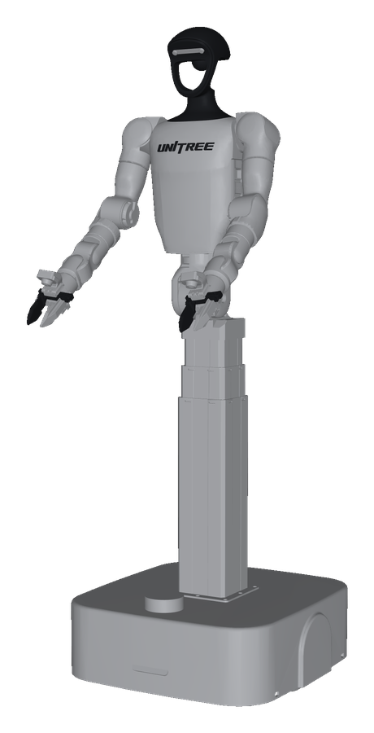
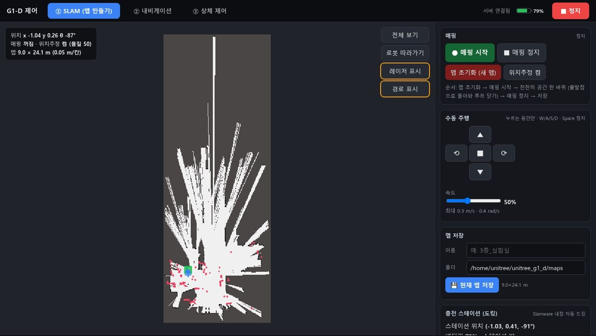
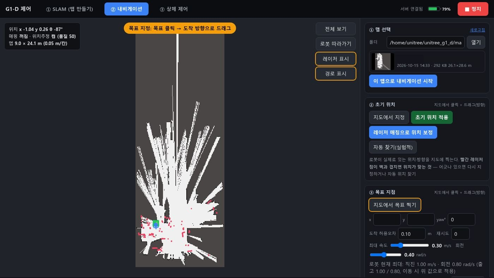
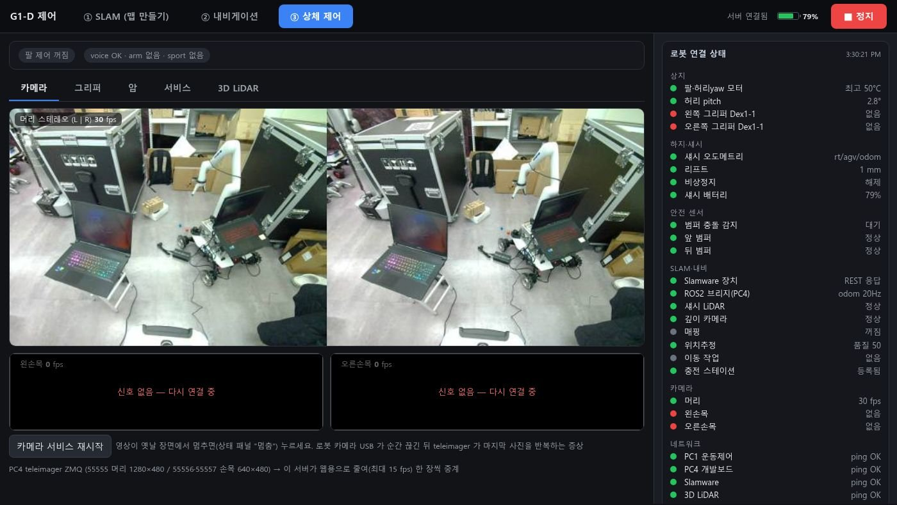
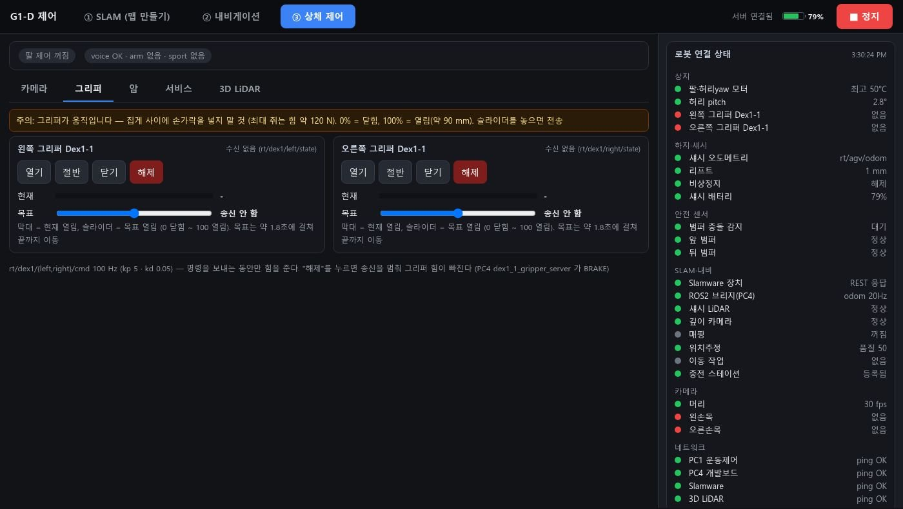
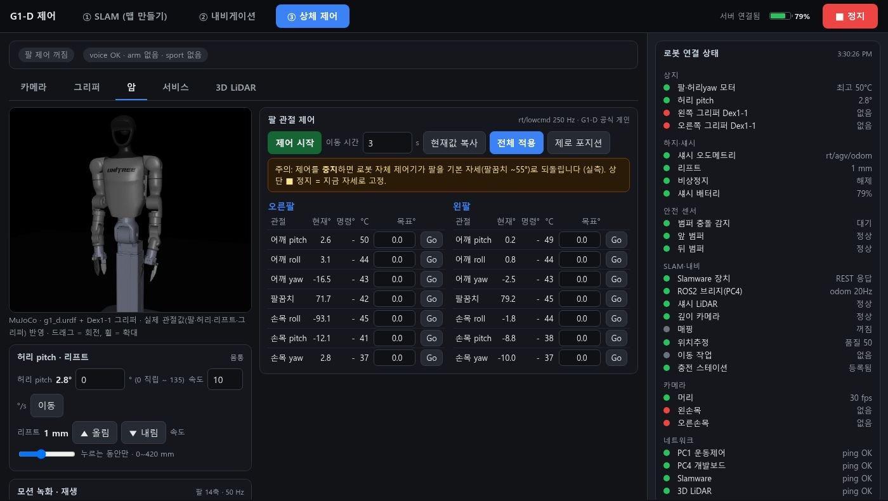
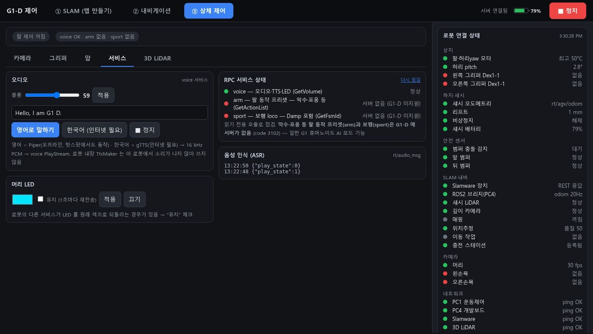
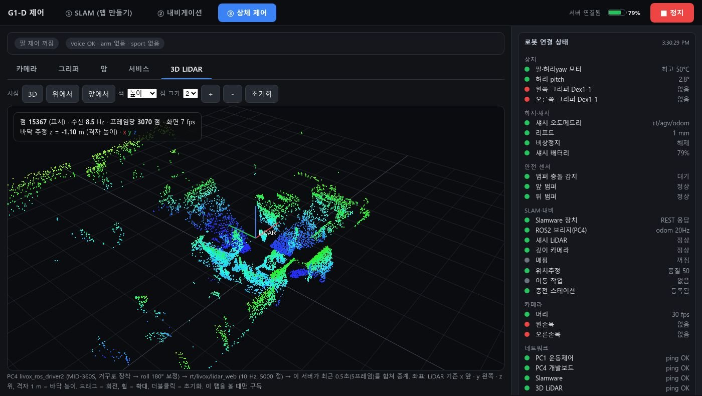

Unitree G1-D
휴머노이드
Dex1-1 그리퍼 · WeGo 웹 UI
안전 수칙과 하드웨어, 연결과 시작 · 종료, WeGo 웹 UI로 하는 지도 작성 · 내비게이션 · 상체 제어, VR 원격조작과 교육 키트, 문제 해결까지 G1-D를 현장에서 운용하는 데 필요한 내용을 한 권에 정리했습니다.

이 설명서에 대하여
| 로봇 | Unitree G1-D (Ultimate: 차동구동 섀시 + 리프트 + 상체, Dex1-1 그리퍼). 섀시가 없는 Standard(고정형)에는 1장의 사양과 상체 내용만 해당합니다 |
| 근거 문서 | WeGo G1-D Documentation (교재, 19장) · G1-D 소프트웨어 README (고객용 · 로봇 설치 · SLAM/내비게이션 UI · 교육 키트) · WeGo 점검 자료의 문제 해결 항목 (2026년 10월) |
| 실측 자료 | WeGo가 G1-D 장비에서 측정한 값 (2026년 10월). PC4 JetPack 5.1.1 · unitree_sdk2_python 1.0.1 기준 |
| 소프트웨어 | WeGo G1-D 웹 제어 UI · PC4 설치 도구 · 교육 키트 (패키지 1.0.0) |
| 함께 보는 책 | Unitree G1 운용 설명서 — G1 공통 안전 수칙 · 음성 · 센서 Unitree G1 개발 설명서 — unitree_sdk2 · DDS · 저수준 제어WeGo Humanoid Studio 사용 가이드 — VR 원격조작 · 기록 · 학습 |
| 판 | 한국어판 · 2026.11.18 |
| 문의 | go.support@wego-robotics.com |
본문의 문서 표시는 Unitree 공식 자료(제품 페이지 · URDF · SDK 예제)에서 온 내용이고, 실측 표시는 WeGo가 G1-D 장비에서 직접 확인한 값입니다. 표의 "근거" 열에는 공식 · URDF · SDK · 실측 · 추정(간접 근거, 현장 확인 권장)을 적었습니다. 자료끼리 다른 곳은 참고 상자에 둘 다 적었습니다.
계정 — PC4의 계정은 Unitree 공장 기본값 unitree / 123입니다. 현장에서는 비밀번호를 바꾸기를 권장하며,
로봇 Wi-Fi 핫스팟의 비밀번호는 웹 UI를 설치할 때 직접 정합니다 (5장).
로봇을 움직이기 전에는 반경 1.5 m를 비우고, 비상 정지 수단을 손에 쥔 사람을 한 명 정하십시오 (2장).
© WeGo Robotics. 표지와 그림 2의 G1-D 이미지는 Unitree가 공개한 URDF(unitree_ros, BSD-3-Clause)의 메시를 MuJoCo로 렌더링한 것이고,
화면 그림은 WeGo G1-D 웹 UI입니다.
목차
- 01제품 소개 · 시스템 구성
- 02중요 안전 수칙
- 03하드웨어 상세
- 04연결 · 시작 · 종료
- 05웹 UI 설치와 접속
- 06웹 UI — SLAM · 내비게이션
- 07웹 UI — 상체 제어
- 08VR 원격조작 · 데이터 수집자세한 내용은 Humanoid Studio 사용 가이드
- 09교육 키트 · 개발 안내SDK · DDS는 G1 개발 설명서
- 10문제 해결
- 부록빠른 참조
제품 소개 · 시스템 구성
G1-D는 Unitree G1 휴머노이드의 상체(양팔 7축 + 허리 2축)를 리프트 컬럼과 차동구동 이동 섀시 위에 올린 "데이터 수집 · 임바디드 AI 플랫폼"입니다. 다리가 없기 때문에 넘어질 걱정 없이 팔 저수준 제어, 원격조작 데이터 수집, 모방학습 정책 배포를 하기에 적합합니다.
라인업 비교 문서
| 항목 | G1-D Standard | G1-D Ultimate |
|---|---|---|
| 외형 (리프트 최저 / 최고) | 1260 × 620 × 620 / 1680 × 620 × 620 mm | 1260 × 525 × 570 / 1680 × 525 × 570 mm |
| 총중량 (배터리 포함) | 약 90 kg | |
| 자유도 (엔드이펙터 제외) | 17 (팔 7 × 2, 허리 2, 리프트 1) | 19 (+ 섀시 차동구동 2) |
| 이동 | 없음 (고정형) | 차동구동, 제자리 360° 회전, 최대 1.5 m/s |
| 섀시 센서 | — | LiDAR × 1, 깊이 카메라 × 2, 물리 충돌 센서 × 2, 저장애물 감지 센서 × 2 |
| 인지 센서 | 머리 HD 스테레오 카메라 × 1, 손목 HD 카메라 × 2 | |
| 배터리 / 운용 시간 | 상체 9 Ah / 약 2시간 | 상체 9 Ah + 섀시 30 Ah / 약 6시간 |
| 컴퓨팅 | 기본 8코어 CPU + 고성능 모듈 (예: Orin NX 16 GB, 100 TOPS) | |
| 무선 | Wi-Fi 6, Bluetooth 5.2 | |
| 구성품 | 수동 컨트롤러(리모컨), 시각화용 컴퓨터 | |
| 엔드이펙터 옵션 | 2지 그리퍼 / 3지 손 (촉각 유 · 무) / 5지 손 | |
이 설명서의 웹 UI · 내비게이션 · 섀시 내용은 이동 섀시가 있는 Ultimate 기준이며, 그리퍼는 Unitree Dex1-1(2지) 기준입니다.
시스템 구성
G1-D 안에는 여러 대의 컴퓨터와 장치가 내부 스위치(192.168.123.0/24, 고정 IP, DHCP 없음)로 연결되어 있고, 모두 같은 DDS 버스를 공유합니다.
| 장치 | IP | 역할 |
|---|---|---|
| PC1 (운동 제어) | 192.168.123.161 | 팔 · 허리 모터 드라이버(lowstate / lowcmd), AGV 서비스(섀시 · 리프트 · 허리 pitch), 모션 스위처, 오디오(voice). 사용자 접근 불가 |
| Slamware (섀시, Slamtec) | 192.168.123.163 | 2D LiDAR SLAM · 경로 계획 · 바퀴 구동 · 도킹 |
| PC4 (Jetson Orin NX) | 192.168.123.164 | 카메라 · 그리퍼 · 3D LiDAR 드라이버 · 웹 UI(설치 시) · 핫스팟 · 원격조작 · 추론. 계정 unitree |
| 3D LiDAR (Livox MID-360S) | 192.168.123.120 | 머리 3D LiDAR (거꾸로 장착, 드라이버에서 보정) |
| 개발 PC | 예) 192.168.123.99 | 랜선으로 로봇에 연결, 고정 IP |
| 핫스팟 접속 기기 | 10.42.0.x | PC4 Wi-Fi G1D-xxxx에 접속해 http://10.42.0.1:8090 |
PC1의 서비스 목록은 추정입니다. 그 RPC · 토픽의 발행자는 있지만 PC4 · Slamware에는 그 프로세스가 없고, PC1은 SSH로 접근할 수 없습니다.
G1-D 자료와 웹 UI는 192.168.123.164의 Jetson Orin NX 보드를 PC4(개발 보드)라고 부르고, 이 설명서도 그렇게 씁니다.
Unitree G1 운용 설명서와 개발 설명서는 같은 주소의 G1 개발 보드를 PC2(개발 연산 유닛)라고 부릅니다.
PC4에 연결된 장치 실측
| 장치 | 연결 | 담당 서비스 |
|---|---|---|
| 머리 스테레오 카메라 1280 × 480 | USB UVC | teleimager.service |
| 손목 카메라 L/R 640 × 480 | USB UVC | teleimager.service |
| Dex1-1 그리퍼 L/R | USB-RS485 → /dev/ttyUSB* (서버가 자동 탐색, 모터 ID 0 = 오른쪽, 1 = 왼쪽) | dex1_gripper.service (Unitree dex1_1_service, 5장) |
소프트웨어 구성
모든 기능이 DDS 토픽 또는 DDS 위의 RPC로 노출됩니다. 그래서 C++ · Python · ROS 2 어느 쪽에서도 같은 네트워크에 있으면 바로 쓸 수 있습니다.
| 층 | 구성 |
|---|---|
| 응용 | WeGo 웹 UI (SLAM · 내비게이션 · 상체), xr_teleoperate (VR 원격조작 · 데이터 수집), unitree_lerobot (학습 · 추론), 사용자 프로그램 · 교육 예제 · 대시보드 |
| PC4 상주 서비스 | teleimager (카메라) · dex1_1_gripper_server (그리퍼) · slamware_ros_sdk_server_node (ROS 2 Foxy 브리지) · unitree_eai_agent · master_service (서비스 관리) |
| PC1 상주 서비스 | 모터 드라이버 (lowstate / lowcmd) · agv (섀시 · 리프트 · 허리) · voice (오디오 · LED) · motion_switcher · slam_operate |
| 통신 | DDS (CycloneDDS 0.10.x) — 토픽 발행/구독 + RPC (api/<서비스>/request ↔ response) |
| SDK | unitree_sdk2 (C++) · unitree_sdk2_python (같은 API의 Python 판) · ROS 2 (Foxy / Humble, rmw_cyclonedds_cpp로 같은 토픽이 보임) |
G1과 다른 점
G1-D의 상체는 G1과 같지만, 다리 대신 리프트와 섀시가 있어 G1의 일부 서비스가 없습니다. G1 공통 내용은 Unitree G1 운용 설명서를 보십시오.
| 항목 | G1-D | 이 설명서 |
|---|---|---|
| 하체 | 다리 없음. 리프트 컬럼(행정 0.42 m) + 차동구동 섀시(Slamware) | 3 · 6장 |
보행 · Damp (sport) | 없음 — RPC 호출 시 3102(서버 없음). "힘 빼고 늘어뜨리기"도 없음 | 7장 |
팔 동작 프리셋 · 앱 티치 (arm · action_store) | 없음 (3102). 대신 웹 UI의 모션 녹화 · 재생 | 7장 |
| 관절 번호 | lowcmd 0–11(다리)과 13(허리 roll)은 없음. 허리 pitch는 별도 토픽 rt/waistpitchcmd | 3 · 9장 |
| 몸통 IMU | rt/lowstate의 imu_state는 0 → rt/secondary_imu (1 kHz) 사용 실측 | 3장 |
| 배터리 값 | rt/lf/bmsstate의 값은 0 → 섀시 Slamware 값 사용 (웹 UI 상단 표시) 실측 | 3장 |
내장 음성 합성 (TtsMaker) | 성공 코드(0)만 돌려주고 소리가 나지 않음 → 웹 UI는 음성을 직접 만들어 재생 실측 | 7장 |
중요 안전 수칙
G1-D는 넘어지지 않지만, 팔은 섀시보다 앞으로 뻗고 섀시는 최대 1.5 m/s로 움직입니다. 로봇을 움직이는 모든 작업 전에 이 장을 확인하십시오. 각 장의 경고 상자도 같은 무게로 지키십시오.
- 반경 1.5 m를 비웁니다 — 로봇 반경 1.5 m 안에 사람 · 물건이 없게 합니다. 팔을 뻗으면 손이 섀시보다 앞으로 나오고(약 0.8 m), 리프트를 올리면 팔의 위치도 함께 올라갑니다.
- 정지 담당을 정합니다 — 비상 정지 수단(리모컨 · 비상 정지 버튼, 웹 UI · 대시보드의 ■ 정지, 키보드 Ctrl+C)을 손에 쥔 사람을 한 명 정합니다.
- 새 코드는 작게 — 새 코드는 먼저
--dry-run으로, 그다음 작은 값(진폭 · 속도)으로 시작합니다. - 섀시 · 리프트는 속도 명령입니다 — 끝날 때 반드시 0을 보냅니다. 프로그램이 죽어도 섀시가 자동으로 멈춘다는 보장은 실측으로 확인되지 않았으므로, 모든 예제는 종료할 때 0을 보냅니다. 직접 코드를 짤 때도
try/finally로 0을 보내십시오. - 한 부위는 한 프로그램만 — 두 프로그램이 같은 부위를 동시에 제어하지 않습니다. 예: VR 원격조작 중에 예제 04(팔)를 실행하지 않습니다.
비울 반경은 모든 자료가 1.5 m로 같지만, 팔이 닿는 거리는 자료마다 다르게 적혀 있습니다. 안전 수칙(교재 3장)은 "팔을 뻗으면 약 0.8 m", 상체 제어 화면 설명(교재 16장)은 "팔이 닿는 반경 약 1 m", 하드웨어 사양(URDF)은 "어깨 기준 도달 거리 약 0.45 m + 손 길이"입니다. 1.5 m 반경을 비우면 세 값을 모두 넘습니다.
정지 수단
| 수단 | 멈추는 것 |
|---|---|
| 리모컨 비상 정지 | 로봇. 상체를 움직이기 전에 위치를 확인해 둡니다 |
| 웹 UI 상단 ■ 정지 | 수동 주행 정지 + 이동 취소 + 리프트 정지 + 팔 · 허리 현재 자세로 고정. 그리퍼는 지금 명령 위치에 고정(놓지 않음). 팔 제어는 끄지 않습니다 |
| 예제를 실행한 터미널에서 Ctrl+C | 교육 예제. 웹 UI의 ■ 정지로는 예제가 멈추지 않습니다 |
| 교육용 대시보드 ■ 정지 | 대시보드가 보내는 명령. 브라우저 하트비트가 1초 끊겨도 자동으로 정지하고 잠깁니다 |
| VR Y + B · PC 화면 비상 정지 버튼 | 원격조작 추종을 멈추고 팔이 원위치로 (8장) |
상체(팔 · 그리퍼)를 움직일 때
- 팔이 닿는 반경과 그리퍼 집게 사이를 비웁니다. 그리퍼가 움직이는 동안 집게 사이에 손가락을 넣지 마십시오 (최대 쥐는 힘 약 120 N).
- 리모컨 비상 정지의 위치를 확인합니다.
- 팔은 한 곳에서만 제어합니다. 개발 PC의 웹 UI와 로봇에 설치한 웹 UI, SDK 예제, VR 원격조작을 동시에 켜면 명령이 섞입니다.
두 곳에서 제어 시작을 누르면 두 프로그램이
rt/lowcmd를 동시에 보내 서로 싸웁니다.
팔 명령(lowcmd)이 끊기면 로봇 자체 제어기가 약 3초 안에 팔을 기본 자세(팔꿈치 50 ~ 60°, 어깨 pitch 약 15°)로 되돌립니다 실측.
팔 주변을 비운 뒤 누르십시오. 지금 자세로 멈추려면 상단 ■ 정지를 누릅니다.
G1-D에는 Damp(힘 빼기) 서비스가 없어서 "힘 빼고 늘어뜨리기"는 없습니다.
해제를 누르면 약 1초 뒤 그리퍼의 힘이 빠져 잡은 물건을 놓칩니다. 그리퍼 서버는 명령이 1초 끊기면 BRAKE로 힘을 빼므로, 웹 UI 서버가 꺼져도 같은 일이 일어납니다.
섀시 · 리프트
- 일정 주기(20 Hz)로 계속 보냅니다.
- 입력이 끊기면 0을 보냅니다 (예제: 키 입력이 0.5초 없으면 0).
- 종료할 때(
finally) 0을 여러 번 보냅니다.
- 지도를 만들 때는 0.3 m/s 이하로 천천히 움직입니다 (6장).
- 자율주행 최대 속도는 처음엔 0.2 m/s, 실내에서는 0.3 m/s · 0.4 rad/s를 권장합니다 (6장).
- 웹 UI의 리프트 버튼은 누르고 있는 동안만 움직이고, 0.5초 입력이 없으면 자동으로 멈춥니다.
웹 UI가 바꾸는 최대 속도는 Slamware의 로봇 전체 설정이라 UI를 꺼도 유지되고, Slamware가 하는 다른 이동(도킹 등)에도 적용됩니다.
장비 · 데이터를 지키는 수칙
- NetworkManager 핫스팟 금지 — PC4에서 Unitree 기본 "Hotspot" 프로필이나
nmcli핫스팟을 켜지 마십시오. 무선칩 드라이버가 멈춰 재부팅해야 회복됩니다 (5장). - 맵 초기화 — 맵 초기화 (새 맵)는 로봇에 있는 맵을 지웁니다. 필요한 맵은 먼저 저장하십시오.
- 그리퍼 캘리브레이션 — Dex1-1 캘리브레이션은 그리퍼를 손으로 완전히 닫은 상태에서만 합니다 (5장).
- 손목 카메라 설정 — 손목 카메라가 없는데 설정에서 켜 두면 카메라 서버가 머리 카메라까지 끕니다 (5장).
하드웨어 상세
상지(팔 7축 × 2 · 허리 2축), Dex1-1 그리퍼, 리프트, 이동 섀시, 센서, 컴퓨팅, 전원의 사양입니다.
"근거" 열의 공식은 Unitree 제품 페이지, URDF는 Unitree가 공개한 g1_d_description, SDK는 unitree_sdk2 헤더 · 예제, 실측은 WeGo 측정입니다.
g1_d_with_dex1_1.urdf의 메시를 MuJoCo로 렌더링했습니다.관절 구조 (URDF 기준)
- 섀시
Left/Right_Wheel_Joint(연속 회전) - 리프트
LZ_mt_Joint0 ~ 0.21 m ·LZ_it_Joint0 ~ 0.21 m - 허리 pitchURDF 이름
Yaw_Joint(y축), 0 ~ 2.356 rad - 허리 yawURDF 이름
torso_Joint(z축), ±2.705 rad - 양팔 7축shoulder pitch · roll · yaw, elbow, wrist roll · pitch · yaw
- 그리퍼 1자유도Dex1-1: 두 손가락 대칭 (랙 · 피니언)
URDF의 Yaw_Joint는 실제로 허리 pitch(y축 회전)이고, torso_Joint가 허리 yaw(z축 회전)입니다. 이름이 아니라 축(axis)을 보고 판단하십시오.
상지 — 팔 7축 × 2 · 허리 2축 문서
관절 (lowcmd idx L/R) | 회전축 | 가동 범위 (L) | 최대 토크 · 속도 (URDF) |
|---|---|---|---|
| Shoulder Pitch (15 / 22) | y | −177° ~ +153° | 25 N·m · 37 rad/s |
| Shoulder Roll (16 / 23) | x | −91° ~ +129° (R: −129° ~ +91°) | 25 N·m · 37 rad/s |
| Shoulder Yaw (17 / 24) | z | ±150° | 25 N·m · 37 rad/s |
| Elbow (18 / 25) | y | −60° ~ +120° | 25 N·m · 37 rad/s |
| Wrist Roll (19 / 26) | x | ±113° | 25 N·m · 37 rad/s |
| Wrist Pitch (20 / 27) | y | ±92.5° | 5 N·m · 22 rad/s |
| Wrist Yaw (21 / 28) | z | ±92.5° | 5 N·m · 22 rad/s |
허리 Yaw (12) · URDF torso_Joint | z | ±155° | 30 N·m · 5 rad/s |
허리 Pitch (별도 토픽) · URDF Yaw_Joint | y | −2.5° ~ +135° (SDK 사용 범위 0 ~ 2.356 rad) | 80 N·m · 5 rad/s |
| 항목 | 값 | 근거 |
|---|---|---|
| 팔 링크 길이 | 어깨 → 팔꿈치 약 226 mm, 팔꿈치 → 손목 약 185 mm, 손목 → 손바닥 약 42 mm → 어깨 기준 도달 거리 약 0.45 m (+ 손 길이) | URDF |
| 최대 가반하중 | 한 팔 약 3 kg (팔을 뻗은 자세에서는 크게 줄어듦) | 공식 |
| 관절 구조 | 저관성 내전형 PMSM, 산업용 크로스 롤러 베어링, 듀얼 엔코더, 중공축 배선, 국부 공랭 | 공식 (G1) |
| 모터 상태 | 대기 중 팔 모터 37 ~ 48 °C, 에러 코드 0, lowstate 1052 Hz | 실측 |
| 권장 PD 게인 | 공식 G1-D 예제: 팔 kp 40 / kd 1, 허리 yaw kp 60 / kd 1, 허리 pitch kp 500 / kd 12 · xr_teleoperate: 팔 kp 80 / kd 3, 손목 kp 40 / kd 1.5 | SDK |
PD 게인의 의미 — 모터 토크 τ = kp × (목표각 − 현재각) + kd × (목표속도 − 현재속도)입니다. kp(N·m/rad)는 목표로 되돌리는 강성(스프링), kd(N·m·s/rad)는 움직임을 잡는 감쇠(브레이크)입니다. 예를 들어 팔 kp 40에서 0.1 rad(약 5.7°) 어긋나면 4 N·m입니다. 허리 pitch는 상체 무게를 버텨야 해서 kp 500, 원격조작은 빠르게 따라가야 해서 팔 kp 80을 씁니다. 처음 시험할 때는 작은 kp부터 올리십시오.
그리퍼 — Unitree Dex1-1 (2지)
| 항목 | 값 | 근거 |
|---|---|---|
| 구조 | 평행 2지 그리퍼, 1자유도 — 모터 1개가 랙 · 피니언으로 두 손가락을 대칭으로 움직임 | 공식 · URDF |
| 모터 | Unitree M4010 1개 (오른쪽 ID 0, 왼쪽 ID 1) | 공식 서비스 문서 |
| 스트로크 | 약 90 mm — URDF 손가락 관절 −0.02 ~ 0.0245 m (× 2) → 손가락 끝 간격 약 6 ~ 95 mm | 공식 · URDF |
| 쥐는 힘 | 5 ~ 120 N 조절 | 공식 |
| 장착 | 손목 yaw 링크에서 41.5 mm (공식 URDF g1_29dof_mode_15_with_dex1_1.urdf) | URDF |
| 통신 | RS485 → PC4 USB 시리얼, dex1_1_gripper_server가 DDS로 변환 (내부 루프 500 Hz) | 서비스 코드 |
| SDK 인터페이스 | rt/dex1/{left,right}/cmd · state, MotorCmds_ 1개, q 0(닫힘) ~ 5.4 rad(열림), kp 5 / kd 0.05 | xr_teleoperate |
리프트 (컬럼)
| 항목 | 값 | 근거 |
|---|---|---|
| 구조 | 3단 컬럼, 2단 프리즘 관절 LZ_mt / LZ_it 각 0 ~ 0.21 m | URDF |
| 행정 | 0.42 m → 전고 1260 ~ 1680 mm | 공식 · URDF |
| 속도 | 공식 약 60 mm/s · SDK 최대 76.5 mm/s (HeightAdjust vz = 1.0) | SDK |
| 구동력 | 관절당 500 N (URDF effort), 최대 속도 0.05 m/s (URDF) | URDF |
| 상태 피드백 | rt/hispeed_state.y [m], 20 Hz · 측정 당시 0.8 mm (최저) | 실측 |
리프트 속도는 공식 사양 약 60 mm/s, SDK 최대 76.5 mm/s, URDF 최대 속도 0.05 m/s(50 mm/s)로 자료마다 다릅니다. 이 설명서는 세 값을 모두 그대로 적었습니다.
이동 섀시 (Ultimate)
| 항목 | 값 | 근거 |
|---|---|---|
| 플랫폼 | Slamtec Ares2 계열 로봇 베이스 — modelName Ares2_Unitree_G1d, HW 7.0, SW 6.3.3 (RK3588 기반 컨트롤러) | 실측 (REST API) |
| 구동 | 차동구동 2륜, 제자리 회전 | 공식 |
| 바퀴 | Ø170 mm × 폭 68 mm, 좌우 바퀴 간격(트랙) 406 mm | URDF |
| 속도 한계 | 직진 ±1.5 m/s, 회전 ±0.6 rad/s (AgvClient 문서) | SDK |
| 섀시 크기 | 약 538 × 525 × 163 mm (메시) · 전체 풋프린트 525 × 570 mm (공식) | URDF · 공식 |
| 배터리 | 30 Ah 내장 · 도킹 충전 지원 | 공식 · 실측 |
| 자기 진단 | LiDAR · 깊이 카메라 · SDP 연결 상태, 비상 정지, 에러 · 경고 플래그 — 측정 당시 모두 정상 | 실측 |
| SLAM 기능 | Slamware 에이전트 6.1.1, 다층 지도(multi_floor) · 다중 로봇(swarm) 모듈 탑재 · 위치추정 품질 44/100 (조사 시점) | 실측 |
| 네트워크 | 로봇 네트워크 192.168.123.163 |
공식 사양과 AgvClient 문서는 직진 최대 1.5 m/s(회전 ±0.6 rad/s)이고, Slamware의 자율주행 최대 속도 출고값은 1.0 m/s · 0.8 rad/s입니다 실측.
웹 UI는 자율주행 속도를 직진 0.1 ~ 1.0 m/s · 회전 0.1 ~ 0.8 rad/s 안에서만 바꿉니다 (6장).
센서
섀시 2D LiDAR (Slamware) 실측
| 스캔 원본 | 1회 1688점, 각도 분해능 약 0.11°, 유효 시야 약 −117° ~ +127° (≈ 244°, 후방은 기구에 가려짐) |
ROS 2 scan 토픽 | 1° 간격으로 리샘플(360점), 10 Hz, range_min 약 0.81 m |
| 실측 거리 | 0.81 ~ 15.2 m |
3D LiDAR (192.168.123.120)
| 식별 | Livox MID-360S (Livox 탐색 응답 장치 타입 35) · 머리에 거꾸로 장착 (roll 180°, LiDAR 기준 바닥 z ≈ −1.26 m) 실측 |
| 사양 (MID-360 기준) | 수평 360° × 수직 −7° ~ +52°, 200,000 pts/s, 10 Hz, 사거리 40 m (@10 %) / 70 m (@80 %), 최소 0.1 m, 265 g, 6.5 W, 65 × 65 × 60 mm (Livox 공식) |
카메라 실측
| 머리 스테레오 | 손목 L / R | |
|---|---|---|
| USB 장치 | Sunplus 1bcf:2d4f "USB2.0 Camera RGB" | 1e45:2050 "USB HDR Camera" |
| 인터페이스 | USB 2.0 High-Speed (480 Mbps) UVC — PC4에 연결 | |
| 현재 운용 | 1280 × 480 (좌우 640 × 480 나란히), 30 fps, MJPEG | 640 × 480, 30 fps, MJPEG |
| 지원 모드 (MJPEG) | 3840 × 1200 @50, 3840 × 1080 / 2560 × 720 / 1920 × 1200 / 1920 × 1080 / 1280 × 720 / 1280 × 480 / 640 × 480 @60 | 1920 × 1080 / 1280 × 720 / 1024 × 768 / 800 × 600 / 640 × 480 / 640 × 360 / 352 × 288 / 320 × 240 @60 |
| 지원 모드 (YUYV) | 640 × 480 @30, 1280 × 480 @10, 1080p @5, 3840 계열 @2 | 640 × 480 @30, 1024 × 768 @10, 720p · 1080p @5 |
| 실측 스트림 | 30.3 fps, 프레임당 약 59 KB, 약 14.6 Mbps | 30.3 fps, 약 51 KB, 약 13 Mbps (각) |
| 미확인 | 화각(FOV), 스테레오 기준선, 이미지 센서 모델 — USB 정보에 없음 (Unitree 하드웨어 문서 확인) | |
공식 라인업은 손목 HD 카메라 2대를 인지 센서로 적었지만, WeGo가 자료를 만든 G1-D에는 손목 카메라가 달려 있지 않아 카메라 서버 설정에서 꺼 두었습니다. 손목 카메라가 없는 로봇과 다시 단 로봇의 설정은 5장을 보십시오.
기타 센서
| 센서 | 내용 |
|---|---|
| 섀시 깊이 카메라 × 2 | Slamware가 관리 (자기 진단에서 연결 정상) 문서 실측 |
| 충돌 센서(범퍼) × 2 | 섀시 앞 · 뒤, Slamware가 관리. 실측 배치: 앞 (+0.285, 0, 높이 0.04 m) / 뒤 (−0.275, 0, 높이 0.04 m). 웹 UI 상태 패널 "안전 센서"에 표시 |
| 저장애물 센서(초음파) × 2 | 장애물 회피 전용으로 데이터가 사용자에게 제공되지 않습니다 (Unitree 확인, 토픽 값 항상 0.0). 웹 UI에는 표시하지 않습니다. 실측 배치: (+0.268, ±0.164, 높이 0.16 m, ±13°) |
| 몸통 IMU | rt/secondary_imu 1 kHz (쿼터니언 · 자이로 · 가속도 · rpy) — rt/lowstate.imu_state는 G1-D에서 0 실측 |
| 마이크 · 스피커 | 4-마이크 어레이, 5 W 스피커 (G1 상체 공식) · voice 서비스 볼륨 100 (실측) |
| RGB LED | 머리, voice 서비스 API 1010 |
컴퓨팅
| 유닛 | 사양 | 역할 |
|---|---|---|
| PC1 운동 제어 (.161) | 8코어 고성능 CPU (공식) · 사용자 접근 불가 | 모터 드라이버, agv · voice · motion_switcher · slam_operate (추정) |
| PC4 개발 (.164) | Jetson Orin NX 16 GB: Arm Cortex-A78AE 8코어 최대 1.98 GHz, Ampere GPU (1024 CUDA, 32 Tensor) 최대 918 MHz, 16 GB LPDDR5, 100 TOPS (INT8), NVMe 2 TB, 전원 모드 MAXN · JetPack 5.1.1 (L4T 35.3.1), Ubuntu 20.04, CUDA 11.4, cuDNN 8.6, TensorRT 8.5.2 실측 | 카메라 · 손 서비스, SLAM 브리지, 원격조작, 추론 |
| Slamware 컨트롤러 (.163) | Rockchip RK3588 계열 (펌웨어 문자열, 추정) | 섀시 SLAM · 주행 |
전원 · 통신
| 상체 배터리 | 9 Ah 탈착식 스마트 배터리 (G1 공식: 13직렬 리튬 9000 mAh, 충전기 54 V / 5 A) 문서 |
| 섀시 배터리 | 30 Ah 내장 · 도킹 충전 지원 (공식 · 실측) |
| 운용 시간 | Ultimate 약 6시간 (공식) |
| 배터리 값 읽기 | Slamware power/status의 batteryPercentage — 웹 UI 상단에 표시. DDS rt/lf/bmsstate의 soc는 실측 0 실측 |
| 무선 · 유선 | Wi-Fi 6 / BT 5.2 (공식) · 내부 스위치 192.168.123.0/24, 고정 IP, DHCP 없음 |
연결 · 시작 · 종료
개발 PC를 로봇 네트워크에 유선으로 연결하는 방법과, 전원을 켜고 끄는 기본 흐름입니다. 웹 UI를 로봇(PC4)에 설치하면 랜선 없이 Wi-Fi 핫스팟으로도 접속할 수 있습니다 (5장).
개발 PC 연결
- 랜선 연결노트북의 유선 네트워크 카드(NIC)를 로봇 스위치(또는 로봇 이더넷 포트)에 연결합니다.
- 고정 IPIP를
192.168.123.99/24(게이트웨이 없음)로 고정합니다. 로봇이 쓰는.161·.163·.164·.120은 피합니다. 예:sudo ip addr add 192.168.123.99/24 dev enp4s0 - 확인
ping 192.168.123.164,ssh unitree@192.168.123.164 - NIC 이름 확인
ip -br a | grep 192.168.123→ 예:enp4s0. 이 이름을 웹 UI · 예제 · SDK에 넘깁니다 (--iface,G1D_IFACE).
| 접속 대상 | 방법 | 계정 |
|---|---|---|
| PC4 (Jetson) | ssh unitree@192.168.123.164 | unitree / 123 (Unitree 공장 기본값) |
| PC1 (운동 제어) | — | SSH로 접근할 수 없습니다 |
현장에서는 PC4 기본 비밀번호를 바꾸기를 권장합니다. 비밀번호를 바꾼 뒤에는 WeGo 설치 도구를 실행할 때 앞에 PC4_PASS=<비밀번호>를 붙입니다 (5장).
PC4에는 NoMachine 서버가 설치되어 있습니다 (NoMachine 클라이언트로 192.168.123.164 접속).
NoMachine 무료판은 개인 용도로만 허용되므로, 업무에 쓰려면 NoMachine의 라이선스 조건을 확인하십시오.
시작 · 종료 순서
| 단계 | 내용 | 확인 방법 |
|---|---|---|
| 전원 켜기 | 섀시 배터리 → 상체 전원 순서로 켭니다 (현장 설명서로 확인) | 약 1 ~ 2분 뒤 PC4 ping 응답 |
| 부팅 확인 | PC1 · PC4 · Slamware 서비스가 자동으로 시작합니다 | 예제 00_check_connection.py 전부 OK, 또는 웹 UI 오른쪽 상태 패널이 초록 |
| 상태 보기 | 웹 UI(핫스팟 http://10.42.0.1:8090 또는 유선 http://192.168.123.164:8090) 또는 대시보드를 브라우저로 엽니다 | 상지 · 하지 · SLAM · 카메라 · 네트워크 상태가 모두 초록 |
| 작업 | 지도 · 내비게이션 · 상체 제어 · 예제 · 원격조작. 팔 제어 시작은 한 곳에서만 | — |
| 종료 | 팔을 초기 자세 근처로 → 프로그램 종료 → 리프트 내림 → 전원 끄기 | — |
WeGo 자료는 켜는 순서(섀시 배터리 → 상체)만 적고, 나머지는 현장 설명서로 확인하도록 남겼습니다. 배터리 · 전원 버튼의 조작 방법은 로봇과 함께 받은 Unitree 자료를 따르십시오. G1 상체 배터리의 조작은 Unitree G1 운용 설명서 5장에 있습니다.
연결 점검 — 예제 00 실측
교육 키트(9장)의 예제 00은 로봇을 움직이지 않고 주요 토픽의 수신 주기, RPC 서비스, 카메라를 점검합니다.
# 개발 PC 터미널 (로봇 네트워크에 연결된 노트북)
python 00_check_connection.py --iface enp4s0
# 실측 결과
OK 팔/허리yaw 상태 (PC1) rt/lowstate 1052.5 Hz
OK 허리 pitch 상태 rt/waistpitchstate 482.0 Hz
OK 리프트 높이 rt/hispeed_state 20.0 Hz
OK 섀시 오도메트리 rt/agv/odom 20.0 Hz
OK Slamware 오도메트리 rt/slamware_ros_sdk_server_node/odom 20.0 Hz
OK voice(오디오/LED) GetVolume → code=0 {'volume': 100}
OK motion_switcher CheckMode → code=0 {'form': '0', 'name': 'ai'}
OK head / left_wrist / right_wrist ZMQ JPEG
웹 UI 설치와 접속
WeGo가 G1-D용으로 만든 웹 제어 UI는 브라우저 하나로 지도 작성 · 내비게이션 · 상체 제어를 합니다. 개발 PC에서 실행해도 되고, 로봇 PC4에 설치하면 로봇이 Wi-Fi 핫스팟을 띄워 노트북 · 태블릿으로 무선 접속할 수 있습니다.
한눈에 보기
| 기능 | 내용 | 장 |
|---|---|---|
| ① SLAM | 섀시 Slamware로 지도 만들기 · 저장 | 6장 |
| ② 내비게이션 | 지도 불러오기 · 위치 맞추기 · 목표점 이동 · 충전 스테이션 복귀 | 6장 |
| ③ 상체 제어 | 머리 카메라 · 그리퍼(Dex1-1) · 팔 14축 · 허리 · 리프트 · 3D 뷰 · 모션 녹화/재생 · 음성 · LED · 3D LiDAR 점군 | 7장 |
| 무선 사용 | 웹 UI를 로봇 PC4에 설치하면 로봇이 Wi-Fi 핫스팟을 띄우고, 노트북 · 태블릿 브라우저로 접속 | 5장 |
개발 PC 세팅 (처음 한 번)
개발 PC는 Ubuntu 20.04 / 22.04 (x86_64)입니다. 코드가 ~/unitree_g1_d 경로를 고정으로 쓰므로 반드시 그 위치에 둡니다.
WeGo가 전달한 G1-D 소프트웨어를 ~/unitree_g1_d에 풀고 아래를 실행하십시오.
sudo apt install -y git python3-venv ffmpeg sshpass
# WeGo가 전달한 G1-D 소프트웨어를 ~/unitree_g1_d 에 둔 뒤
~/unitree_g1_d/scripts/setup_devpc.sh
setup_devpc.sh는 Unitree 공식 SDK · URDF(버전 고정)와 오프라인 영어 음성 합성 엔진을 내려받고, ~/unitree_g1_d/.venv를 만든 뒤 패키지를 설치합니다.
| 폴더 | 내용 |
|---|---|
slam_nav_ui/ | 웹 UI 서버 (:8090) — run.sh |
deploy/ | 로봇 PC4 설치 — install_pc4.sh, update_ui_pc4.sh, wrist_cams.sh, livox/(3D LiDAR 드라이버 설치 · 설정, 소스 동봉) |
training/ | 교육 키트 — 예제 00 ~ 09, 대시보드(:8080), VR, setup_env.sh (9장) |
slamware_viz/ · tools/ | RViz2 Slamware 시각화 · livox_host.py (LiDAR 데이터 목적지 변경) |
ref/ | Dex1-1 그리퍼 URDF · 메시(3D 뷰용). 나머지(unitree_sdk2_python, unitree_ros)는 scripts/fetch_deps.sh가 받습니다 |
customer/ | 사용 설명(README)과 교재 · 화면 캡처 |
맵(maps/), 모션(motions/), .venv/, 음성 엔진 파일은 설치나 실행 중에 생깁니다.
타사 소프트웨어 — scripts/fetch_deps.sh가 받는 Unitree SDK(unitree_sdk2_python, BSD-3-Clause) · URDF(unitree_ros),
deploy/livox/src의 Livox-SDK2 · livox_ros_driver2(MIT), 오프라인 영어 음성 합성 엔진과 음성 모델은 각 원저작자의 라이선스를 따릅니다.
개발 PC에서 웹 UI 실행
로봇에 유선으로 연결된 상태에서 실행합니다.
cd ~/unitree_g1_d/slam_nav_ui ./run.sh # 192.168.123.x NIC 자동 선택 → 브라우저 http://localhost:8090 자동 열림 ./run.sh --maps ~/내맵폴더 # 맵 저장 기본 폴더 변경 (기본 ~/unitree_g1_d/maps)
터미널에서 Ctrl+C → ./run.sh → 브라우저 새로고침. 화면(HTML)만 새로 읽히고 서버는 예전 코드로 남아 있으면
버튼을 눌렀을 때 "알 수 없는 명령"이 뜹니다. 재시작해도 로봇의 맵 · 위치 · 매핑 상태는 그대로입니다 (Slamware 장치에 있음).
로봇(PC4)에 설치 — 무선으로 쓰기
G1-D는 이동 로봇이라 랜선을 꽂고 다닐 수 없습니다. 그래서 웹 UI 서버를 로봇 안 PC4에서 실행하고, PC4가 Wi-Fi 핫스팟을 띄웁니다. 노트북 · 태블릿은 핫스팟에 붙어 브라우저만 엽니다. 팔 250 Hz 같은 실시간 제어는 PC4 ↔ 로봇 내부 유선망에서 처리되고, Wi-Fi로는 화면과 버튼 신호만 오갑니다. 그래서 Wi-Fi가 잠깐 끊겨도 제어가 흔들리지 않습니다.
개발 PC를 로봇에 유선으로 연결한 상태에서 실행합니다. PC4 비밀번호를 바꿨다면 앞에 PC4_PASS=<비밀번호>를 붙입니다.
cd ~/unitree_g1_d/deploy ./install_pc4.sh --ssid G1D-1 --wifi-pass <8자 이상> # ① 웹 UI + Wi-Fi 핫스팟 (처음 한 번) ./livox/install_livox_pc4.sh # ② 3D LiDAR 드라이버 (처음 약 3분, 부팅 시 자동 실행) ./wrist_cams.sh off # ③ 손목 카메라가 없는 로봇만
--wifi-pass를 빼면 설치 스크립트에 들어 있는 기본 비밀번호가 쓰입니다. 이 값은 모든 로봇에 같으므로,
처음 설치할 때 --wifi-pass로 직접 정한 비밀번호(8자 이상)를 쓰십시오. 핫스팟 이름(--ssid)을 빼면 G1D- + 로봇 Wi-Fi MAC 끝 4자리가 됩니다.
| 상황 | 명령 |
|---|---|
| 웹 UI 코드만 업데이트 (Wi-Fi 접속이 끊기지 않음) | ./update_ui_pc4.sh — 이전 파일은 PC4 slam_nav_ui/backup_* |
| 전체 다시 설치 · 재배포 | ./install_pc4.sh를 다시 실행 (최신 코드로 덮어쓰고 서비스 재시작) |
| 핫스팟 이름 · 비밀번호 지정 | ./install_pc4.sh --ssid G1D-1 --wifi-pass <8자 이상> |
| 핫스팟 없이 설치 (유선만) | ./install_pc4.sh --no-hotspot → http://192.168.123.164:8090 |
| PC4 주소 · 비밀번호 지정 | PC4_PASS=<비밀번호> ./install_pc4.sh --ip 192.168.123.164 |
| 손목 카메라를 다시 달았을 때 | ./wrist_cams.sh on |
| 3D LiDAR 드라이버 다시 빌드 | ./livox/install_livox_pc4.sh --rebuild |
PC4에 생기는 것
설치는 Unitree 서비스 · 파일을 건드리지 않습니다.
| 항목 | 내용 |
|---|---|
~/unitree_g1_d/ | 웹 UI 코드 · URDF · SDK 사본 · 맵 폴더(maps) · 모션 파일(motions) · 오프라인 영어 음성 합성 · 추가 패키지(vendor, 오프라인 설치 — PC4는 인터넷이 없음) |
g1d-ui.service | 웹 UI 서버 (부팅 시 자동 시작, --iface eth0) |
g1d-ap.service | 핫스팟 (hostapd + dnsmasq DHCP, 10.42.0.1/24, 2.4 GHz 6번 채널, 부팅 시 자동). hostapd는 패키지를 설치하지 않고 풀어서만 씁니다 |
livox-lidar.service | 3D LiDAR 드라이버 · ~/livox_ws (livox/install_livox_pc4.sh로 설치) |
| 권한 | /etc/sudoers.d/g1d-ui — systemctl restart teleimager.service 한 명령만 비밀번호 없이 (웹 UI의 카메라 서비스 재시작 버튼) |
| Python | PC4에 이미 있는 conda 환경을 씁니다. 환경 자체는 수정하지 않고, 부족한 패키지는 오프라인 휠로 같이 보냅니다 |
# PC4 (SSH) — 상태 확인 · 로그 · 끄기 systemctl status g1d-ui g1d-ap dex1_gripper livox-lidar # 상태 journalctl -u g1d-ui -f # 웹 UI 로그 sudo systemctl disable --now g1d-ap # 핫스팟 끄기 sudo systemctl disable --now g1d-ui # 로봇 웹 UI 끄기 # 완전히 제거 sudo systemctl disable --now g1d-ui && sudo rm /etc/systemd/system/g1d-ui.service sudo systemctl disable --now g1d-ap && sudo rm /etc/systemd/system/g1d-ap.service rm -rf ~/unitree_g1_d
PC4 무선칩(Realtek RTL8852BU, 드라이버 v1.19.14)이 그 방식에서 RTW: cfg80211_rtw_mgmt_tx(wlan0) FAIL을 반복하며 커널이 막힙니다.
실측 증상: 핫스팟 신호가 사라짐, 시스템 부하 50, SSH 무응답, 손 · 그리퍼 서비스가 시리얼 장치를 20분간 못 찾음. 핫스팟을 꺼도 재부팅해야 회복됩니다 (2026-10-14 실측).
같은 칩이라도 hostapd 방식은 무선 접속 · 웹 UI 사용 중 오류 0건으로 정상이어서, 설치 스크립트는 hostapd만 씁니다.
모든 로봇에 같은 명령으로 설치합니다. 핫스팟 이름을 지정하지 않으면 SSID가 Wi-Fi MAC 주소로 자동으로 달라지므로 이름이 겹치지 않습니다.
웹 UI 접속
| 연결 | 주소 |
|---|---|
무선 — Wi-Fi G1D-xxxx / 설치할 때 정한 비밀번호 | http://10.42.0.1:8090 |
| 유선 — 로봇 네트워크 192.168.123.x | http://192.168.123.164:8090 |
| 개발 PC에서 직접 실행 | http://localhost:8090 |
- 핫스팟에는 인터넷이 없습니다 (DNS 없음). 노트북에 "인터넷 없음"이 떠도 정상입니다.
- 주소 뒤에
#upper:arm,#upper:lidar처럼 붙이면 그 화면이 바로 열립니다 (7장). - 개발 PC의 웹 UI와 PC4의 웹 UI를 동시에 띄워도 되지만, 팔 제어 시작은 한쪽에서만 누릅니다 (두 곳이
lowcmd를 보내면 싸움). - 3D 뷰는 Jetson EGL로 렌더합니다. 서비스를 끌 때 나오는
EGLError로그는 무해합니다.
3D LiDAR 드라이버
./livox/install_livox_pc4.sh # 처음 약 3분 (PC4 에서 빌드), 다시 실행하면 설정만 갱신 ./livox/install_livox_pc4.sh --rebuild # 드라이버 다시 빌드
PC4에 Livox-SDK2 + livox_ros_driver2(소스는 livox/src/에 포함, 인터넷 불필요)를 빌드하고 livox-lidar.service를 등록한 뒤,
LiDAR(.120)의 데이터 목적지를 PC4(.164)로 바꿉니다. 장착이 뒤집힌 것(roll 180°)과 머리 프레임을 지우는 필터가 설정에 들어 있습니다.
원래대로(Unitree PC1) 되돌리려면 deploy 폴더에서 python3 ../tools/livox_host.py 192.168.123.161을 실행합니다.
손목 카메라
PC4의 카메라 서버(teleimager)는 설정에 켜진 카메라 중 하나라도 찾지 못하면 서버 전체를 종료합니다(머리 카메라도 같이 꺼짐).
그래서 손목 카메라를 뗀 로봇은 손목 카메라를 꺼 두어야 합니다. 개발 PC에서 deploy/wrist_cams.sh off(다시 달면 on)가 이 설정을 바꾸고
서비스를 재시작합니다 (약 10초 영상 끊김). 손으로 바꾸는 방법은 아래와 같습니다.
| 항목 | 값 |
|---|---|
| 설정 파일 | PC4 ~/unitree_eai_environment/service/teleimager/cam_config_server.yaml |
| 원본 백업 | 같은 폴더 cam_config_server.yaml.bak (손목 카메라가 켜져 있던 원래 설정) |
| 끄는 방법 | left_wrist_camera, right_wrist_camera의 enable_zmq와 enable_webrtc를 모두 false → 카메라를 아예 찾지 않음 |
| 포트 | 왼손목 ZMQ 55556 / WebRTC 60002, 오른손목 ZMQ 55557 / WebRTC 60003 |
- 연결 확인손목 카메라 USB를 연결하고, PC4에서
lsusb로 카메라가 보이는지 확인합니다. - 설정 변경설정 파일에서 두 손목 카메라의
enable_zmq,enable_webrtc를true로 바꿉니다 (또는 백업 파일로 되돌립니다). - 재시작
teleimager서비스를 재시작하고 로그에 에러가 없는지 봅니다. - 영상 확인개발 PC에서 손목 영상을 한 장씩 받아 확인합니다.
# PC4 터미널 — 먼저 ssh unitree@192.168.123.164 cd ~/unitree_eai_environment/service/teleimager # 방법 1: 원본 설정으로 되돌리기 cp cam_config_server.yaml.bak cam_config_server.yaml # 방법 2: 손목 카메라 항목만 true 로 (left/right_wrist_camera 블록 안의 4줄) sed -i '/_wrist_camera:/,/^# ===/ s/enable_\(zmq\|webrtc\): false/enable_\1: true/' cam_config_server.yaml grep -A4 "_wrist_camera:" cam_config_server.yaml # true 로 바뀌었는지 확인 sudo systemctl restart teleimager journalctl -u teleimager -f # "Cannot find UVCCamera" 가 없어야 정상 # 개발 PC 터미널 python 09_image_client.py --cams head left_wrist right_wrist --save 1
로그에 Cannot find UVCCamera for left_wrist_camera → failed to initialize previously, cannot start가 반복되고 서비스가 5초마다 재시작됩니다.
이때는 손목 카메라 연결을 확인하거나, 다시 false로 꺼 두고 재시작하십시오.
Dex1-1 그리퍼 서비스 켜기 (로봇마다 한 번)
웹 UI 그리퍼 탭은 rt/dex1/{left,right}/cmd · state를 씁니다. 그리퍼를 장착한 뒤 PC4에서 Unitree 기본 서비스(dex1_1_service)를 켭니다.
캘리브레이션은 그리퍼를 손으로 꽉 닫은 상태에서 해야 하므로 설치 스크립트로 자동화하지 않았습니다.
# PC4 (SSH) sudo systemctl disable --now brainco_hand # 다른 손 서비스가 켜져 있으면 끈다 (둘 다 /dev/ttyUSB* 를 연다) cd ~/unitree_eai_environment/service/dex1_1_service/bin sudo ./dex1_1_gripper_server -c # 그리퍼를 손으로 꽉 닫고 s + Enter (오른쪽 ID 0 → 왼쪽 ID 1) sudo ./test_dex1_1_gripper_server -l -r # 초기 q ≈ 0 이면 정상 cd .. && bash setup_autostart.sh # dex1_gripper.service 자동 시작 등록 (Unitree 스크립트)
확인: 웹 UI ③ → 그리퍼 탭에 "연결"과 현재 열림 %가 표시되고, 오른쪽 상태 패널의 "왼쪽/오른쪽 그리퍼 Dex1-1"이 초록입니다.
웹 UI — SLAM · 내비게이션
G1-D의 지도 작성 · 자율주행은 섀시의 Slamware(2D LiDAR)가 합니다. 웹 UI의 ① SLAM 탭에서 지도를 만들고, ② 내비게이션 탭에서 지도를 불러와 위치를 맞춘 뒤 목표점으로 보내거나 충전 스테이션으로 돌려보냅니다.
화면 구성
| 영역 | 내용 |
|---|---|
| 상단 | 탭 ① SLAM (맵 만들기) / ② 내비게이션 / ③ 상체 제어, 오른쪽에 서버 연결 · 배터리(섀시 Slamware 값, 충전 · 도킹 표시) · ■ 정지(수동 주행 정지 + 이동 취소 + 리프트 정지 + 팔 · 허리 현재 자세 고정) |
| 지도 (가운데) | 드래그 = 화면 이동, 휠 = 확대/축소, 전체 보기 · 로봇 따라가기 · 레이저 표시 · 경로 표시 |
| 왼쪽 위 HUD | 로봇 위치 x, y, θ · 매핑 상태 · 위치추정 품질 · 맵 크기 |
| 오른쪽 패널 | 탭별 조작 카드 + 로봇 연결 상태 + 로그 |
| 색 | 의미 | 색 | 의미 |
|---|---|---|---|
| 밝은 회색 / 검정 / 어두운 회색 | 빈 공간 / 장애물 / 미탐색 | 파랑 화살표 + 다각형 | 로봇 위치 · 방향 + 풋프린트 (점선 = 여유 포함) |
| 빨간 점 | 현재 레이저 스캔 — 벽과 겹치면 위치추정이 맞는 것 | 초록 선 | Slamware 계획 경로 |
| 하늘색 선 | 지나온 궤적 (이동할 때마다 새로 시작) | 노랑 화살표 + 원 | 목표 위치 · 도착 허용오차 원 (초록 = 도착, 빨강 = 실패) |
| 보라 화살표 | 지정 중인 초기 위치 | 초록 사각형 | 충전 스테이션 |
① SLAM 탭 — 맵 만들기

- 맵 초기화 (새 맵)맵 초기화 (새 맵)은 로봇에 있는 맵을 지웁니다. 필요한 맵은 먼저 저장하십시오.
- 매핑 시작● 매핑 시작 — HUD에 "매핑 ● 진행 중"이 뜹니다.
- 한 바퀴 돌기천천히(0.3 m/s 이하) 공간을 한 바퀴 돕니다. 리모컨 주행을 권장합니다.
화면의 수동 주행(버튼 또는 W/A/S/D, 누르는 동안만)은 Slamware가 속도 명령을 거부하는 경우가 있습니다 (PC4 로그
Can't set not monitored velocity). - 루프 닫기출발점으로 돌아와 루프를 닫습니다. 맵이 정합되어 더 정확해집니다.
- 저장■ 매핑 정지 → 이름 · 폴더 입력 → 현재 맵 저장
저장 결과: <폴더>/<이름>.stcm(Slamware 맵, 충전 스테이션 포함) · .png(미리보기) · .json(원점 · 크기 · 저장 시 로봇 위치).
빨간 점(레이저)이 검은 벽과 겹치면 위치가 맞는 것입니다.
로봇이 스테이션 위에 있을 때 매핑을 마치고, 저장 전에 스테이션 등록(이 장 "충전 스테이션")까지 하면 한 번에 끝납니다.
고객용 README는 "리모컨이나 화면 버튼(W/A/S/D)"으로 주행하라고 적었고, 교재(16장)는 화면 수동 주행을 Slamware가 거부하는 경우가 있어 리모컨 주행을 권장합니다.
SLAM UI README는 화면 수동 주행(rt/cmd_vel_no_limit)을 "현장 확인 필요"로 표시했습니다.
② 내비게이션 탭 — 목표점 이동

① 맵 선택
폴더의 맵 목록(미리보기 · 크기)에서 고른 뒤 이 맵으로 내비게이션 시작을 누릅니다. 맵이 로봇에 업로드되고, 매핑이 꺼지고, 위치추정이 켜집니다. 이때 로봇 위치가 원점(0, 0)으로 초기화되므로 ② 초기 위치 지정이 필수입니다.
② 초기 위치
| 방법 | 사용 |
|---|---|
| 지도에서 지정 | 로봇이 실제로 있는 곳을 클릭 → 로봇 앞방향으로 드래그 → 초기 위치 적용 |
| 레이저 매칭으로 위치 보정 | 현재 위치 ±0.6 m, ±30° 안에서 레이저-벽 일치율이 가장 높은 위치를 계산해 보여 줍니다 → 확인하면 적용. 대략 맞춘 뒤 미세 보정에 좋습니다 (예: 일치율 3.9 % → 46.8 %) |
| 자동 찾기(실험적) | Slamware 내장 재위치 기능 — 명령은 수락되지만 효과가 확인되지 않았습니다 |
판정: 빨간 레이저 점이 검정 벽과 겹치고, HUD 위치추정 품질이 높으면(실측 70 ~ 90) 정상입니다.
Slamware 파라미터 motionplan.low_localization_quality_threshold = 40입니다. 상태 패널에 "품질 xx < 40 이동 정지됨"이 표시되면 먼저 위치를 다시 맞추십시오.
③ 목표 지점
- 목표 찍기지도에서 목표 찍기(기본 선택됨) → 목표를 클릭하고 도착 방향으로 드래그합니다. 또는 x, y, yaw°를 직접 입력합니다.
- 이동옵션(아래 표)을 확인하고 ▶ 이동. 이동 전 자동 검사(풋프린트 충돌 · 미탐색 · 위치추정 품질) 경고가 뜨면 내용을 읽고 판단합니다.
- 확인 · 멈춤진행 패널에서 상태를 봅니다. 멈추려면 ✕ 취소 또는 상단 ■ 정지.
| 옵션 | 의미 | 권장 |
|---|---|---|
| 최대 속도 · 회전 [m/s · rad/s] | 이동 · 도킹 직전에 Slamware 최대 속도 파라미터(base.max_moving_speed, base.max_angular_speed)를 이 값으로 설정. 출고값 1.0 m/s · 0.8 rad/s. 로봇 전체 설정이라 UI를 꺼도 유지됨 | 실내 0.3 m/s · 0.4 rad/s (처음엔 0.2) |
| 도착 허용오차 [m] | 목표에서 이 거리 안이면 도착으로 인정 (Slamware acceptable_precision) | 0.10 (좁은 곳 0.2 ~ 0.3) |
| 도착 방향 맞추기 | 도착 후 지정 방향으로 회전 (with_yaw) | 필요할 때만 |
| 정밀 도착 (precise) | 목표점에 더 정확히 맞춤 (느려질 수 있음) | 작업대 앞 등 |
| 동적 장애물 무시하고 경로 찾기 | 깊이 카메라에 잡힌 일시적 장애물(사람 등)을 무시하고 경로 탐색 | 좁거나 사람이 많을 때만 |
| 재시도 | 경로 탐색 실패 시 재시도 횟수 | 0 ~ 2 |
- 속도 범위는 직진 0.1 ~ 1.0 m/s (기본 0.30), 회전 0.1 ~ 0.8 rad/s (기본 0.40)입니다. ▶ 이동 · 도킹 직전에 적용되며, 속도만 적용 버튼도 있습니다.
- 적용까지 약 1초 걸립니다 (서버가 1.2초 기다린 뒤 이동 시작). Slamware 프리셋 "low"는 0.4 m/s입니다 실측.
| 진행 패널 표시 | 뜻 / 조치 |
|---|---|
| ▶ 진행 중 · 남은 거리 · 방향 오차 | 정상 이동 중 |
| 도착 | 허용오차 안 도착 (실측 예: 0.021 m, 49.8초) |
CANNOT_REACH_TARGET | 경로 없음 — 출발 · 목표가 좁거나 막힘. 더 넓은 곳을 목표로, 허용오차 늘리기, "동적 장애물 무시" 시도 |
WAIT_PLANNING_FAILED (Slamware 이벤트) | 경로 계획을 계속 실패하며 대기 중 → 취소 후 위 조치 |
aborted | 새 명령 또는 취소로 중단됨 |
이동을 눌러도 움직이지 않으면 10장의 "이동을 눌러도 안 움직일 때" 순서로 점검하십시오.
로봇 풋프린트
| 항목 | 내용 |
|---|---|
| 계산 방법 | 공식 URDF(g1_d.urdf) 41개 링크 메시를 현재 팔 · 허리 · 리프트 각도로 순기구학 → 바닥 투영 볼록 다각형 (1초마다 갱신) |
| 섀시만 | 538 × 525 mm, 중심 = 바퀴 축 중심 (= Slamware 로봇 위치) |
| 팔 영향 | 팔꿈치 90°로 손을 앞으로 둔 자세(URDF 0 자세)에서는 손이 섀시 앞보다 약 0.2 m 돌출 (앞 끝 0.47 m). 팔을 접으면 섀시와 거의 같음 |
| 여유 (margin) | 풋프린트 바깥 여유 거리 (기본 0.05 m) |
| 표시 · 검사 | 현재 위치 · 목표 위치에서 장애물과 겹치는 칸 수, 최소 여유 거리, 미탐색 칸 수. 겹치면 빨강 + 이동 전 경고. 파란 다각형이 빨갛게 바뀌면 팔이 장애물과 겹친 것입니다 |
| Nav2 내보내기 | g1d_footprint_*.yaml (footprint, footprint_padding, 외접원 0.32 m) — PC4의 경로 계획을 Nav2로 바꿀 때 사용 |
실제 경로 계획에 쓰이는 풋프린트는 Slamware 펌웨어 설정에 고정되어 있고 API로 읽거나 바꿀 수 없습니다 (파라미터 키 25종 조회 결과 모두 거부). 웹 UI의 풋프린트는 사전 검사 · 표시용입니다. 바꾸려면 Unitree 또는 Slamtec에 문의하십시오.
충전 스테이션 (도킹)
스테이션 등록 (맵마다 한 번)
- 위치 확인맵을 불러오고 위치추정이 맞는지 확인합니다 (레이저-벽 일치, 품질 높음).
- 스테이션에 올리기리모컨으로 로봇을 스테이션에 올려 충전을 시작합니다 (카드에 "도킹 중").
- 등록현재 위치를 충전 스테이션으로 등록 → 지도에 초록 표시
- 맵 저장스테이션은 맵 파일(
home_dock레이어)에 같이 저장됩니다.
스테이션에 올려 충전해도 30초 동안 자동 등록되지 않았습니다. 반드시 버튼으로 등록하십시오. 또 맵을 다시 불러오거나 초기화하면 저장하지 않은 등록은 사라집니다.
스테이션으로 복귀
도킹 스테이션으로 복귀를 누르면 Slamware GoHomeAction으로 스테이션까지 이동해 도킹 · 충전합니다.
실측: 약 2 m 이동, 49.8초, 위치 오차 0.02 m, 충전 시작 확인 (2026-10-13).
| 도킹 명령 | 결과 |
|---|---|
GoHomeAction (UI 기본) | 등록된 스테이션 위치로 복귀 · 도킹 |
MultiFloorBackHomeAction | DOCK_ID_NOT_FOUND — 다층맵 도크 POI가 필요 (UI는 GoHome 실패 시에만 시도) |
SLAM UI README는 "MultiFloorBackHomeAction(실패 시 GoHomeAction)"으로 적었고, 교재(16장)와 WeGo 점검 자료는 웹 UI가 GoHomeAction을 먼저 쓰고
실패할 때만 MultiFloorBackHomeAction을 시도한다고 적었습니다. 이 설명서는 교재 쪽을 표에 적었습니다.
로봇 연결 상태 패널
| 그룹 | 항목 (초록 = 1초 안에 수신 · 정상) |
|---|---|
| 상지 | 팔 · 허리 yaw 모터(에러 · 최고 온도), 허리 pitch, 왼쪽 · 오른쪽 그리퍼 Dex1-1 (열림 %) |
| 하지 · 섀시 | 섀시 오도메트리, 리프트 높이, 비상 정지, 섀시 배터리 |
| 안전 센서 | 범퍼 충돌 감지(감지 후 5초간 빨강 + 로그 + 누적 횟수), 앞 범퍼, 뒤 범퍼 |
| SLAM · 내비 | Slamware 장치(REST), ROS 2 브리지(PC4), 섀시 LiDAR, 깊이 카메라, 매핑, 위치추정 품질(임계값 경고), 이동 작업, 충전 스테이션 등록 · 도킹 |
| 카메라 | 머리 · 왼손목 · 오른손목 fps |
| 네트워크 | PC1 · PC4 · Slamware · 3D LiDAR ping |
앞 · 뒤 범퍼 값은 1 Hz로 갱신되어 순간 눌림을 놓칠 수 있으므로, 웹 UI는 Slamware 범퍼 이벤트(5 Hz 조회)를 함께 씁니다. 초음파 센서는 데이터가 제공되지 않아 표시하지 않습니다.
동작 원리
| 기능 | 인터페이스 |
|---|---|
| 맵 · 위치 · 레이저 · 경로 · 배터리 · 헬스 · 스테이션 읽기 | Slamware REST http://192.168.123.163:1448 |
| 매핑 켜기/끄기 · 맵 초기화 · 위치추정 켜기/끄기 · 초기 위치 | DDS → slamware_ros_sdk_server_node (set_map_update, clear_map, set_map_localization, set_pose) |
| 맵 저장 / 불러오기 | REST GET / PUT /api/core/slam/v1/maps/stcm |
| 목표점 이동 · 취소 | REST POST /api/core/motion/v1/actions (MoveToAction, acceptable_precision) / DELETE …/actions/:current |
| 계획 경로 | DDS global_plan_path (nav_msgs/Path) + REST /motion/v1/path |
| 스테이션 등록 · 복귀 | REST PUT /slam/v1/homepose · GoHomeAction |
| 수동 주행 | DDS rt/cmd_vel_no_limit |
웹 UI — 상체 제어
③ 상체 제어 탭은 팔 · 허리 · 리프트 · 그리퍼 · 카메라 · 음성 · 3D LiDAR를 한 화면에서 다룹니다. 탭 위쪽 칩 두 개가 팔 제어 상태(켜짐/꺼짐)와 RPC 서비스 상태(voice · arm · sport)를 보여 주고, 아래에 서브탭 5개가 있습니다.
| 서브탭 | 내용 | 로봇 움직임 | 주소로 바로 열기 |
|---|---|---|---|
| 카메라 | 머리 스테레오 실시간 영상 (손목 카메라가 없으면 손목 칸은 "신호 없음") | 읽기 전용 | #upper:cam |
| 그리퍼 | Dex1-1 좌우 열기 · 닫기 · 해제 · 현재 열림 | 동작 | #upper:hand |
| 암 | 팔 14관절 · 허리 pitch · 리프트 · 3D 뷰 · 모션 녹화 · 재생 | 동작 | #upper:arm |
| 서비스 | 볼륨 · 음성 합성 · 머리 LED · 음성 인식 · RPC 서비스 점검 | 소리 · 빛만 | #upper:svc |
| 3D LiDAR | 머리 3D LiDAR(MID-360S) 점군 3D 보기 | 읽기 전용 | #upper:lidar |
예: http://localhost:8090/#upper:arm을 열면 바로 암 서브탭이 뜹니다. 카메라 · 3D 뷰 · LiDAR 데이터는 보고 있는 서브탭의 것만 받아서 네트워크를 아낍니다.
맨 위의 배터리는 섀시 Slamware 값입니다.
- 팔이 닿는 반경(약 1 m)과 그리퍼 집게 사이를 비웁니다.
- 리모컨 비상 정지 위치를 확인합니다.
- 팔 제어는 한 곳에서만 합니다. 개발 PC의 웹 UI와 로봇에 설치한 웹 UI를 동시에 열 수는 있지만, 두 곳에서 제어 시작을 누르면 두 프로그램이
rt/lowcmd를 동시에 보내 서로 싸웁니다.
카메라 서브탭

| 영상 | 해상도 | PC4 teleimager 포트 | 웹 UI 주소 |
|---|---|---|---|
| 머리 스테레오 (왼쪽 | 오른쪽) | 1280 × 480 | ZMQ 55555 | /api/cam/head.jpg |
| 왼손목 | 640 × 480 | ZMQ 55556 | /api/cam/lw.jpg |
| 오른손목 | 640 × 480 | ZMQ 55557 | /api/cam/rw.jpg |
흐름: PC4 teleimager(JPEG, 30 fps) → ZMQ → 웹 UI 서버가 최신 프레임을 웹용으로 줄여(머리 768 × 288, 손목 480 × 360, 화질 70) 보관 → 브라우저가 한 장씩 받아 갑니다(최대 15 fps).
각 영상 왼쪽 위와 연결 상태 패널 "카메라"의 fps는 서버가 로봇에서 받는 속도입니다.
원본 3대를 그대로 보내면 합계 약 40 Mbps라 핫스팟(2.4 GHz)이 못 버텨 머리 영상이 멈추고 손목 영상이 검게 깜빡였습니다. 끊기지 않는 스트림(MJPEG) 방식은 브라우저의 주소당 동시 연결 한도(6개)를 채워 새 영상이 막혔습니다. 줄여서(3대 합계 약 6.6 Mbps) 한 장씩 받으면 Wi-Fi가 느릴 때 fps만 떨어지고, 끊겨도 자동으로 다시 붙습니다. 신호가 없으면 화면에 "신호 없음 — 다시 연결 중"이 뜹니다.
- 손목 카메라 — 손목 카메라가 없는 로봇은 PC4
teleimager설정에서 꺼 둡니다(켜 두면teleimager가 머리 카메라까지 끕니다). 그래서 손목 칸은 "신호 없음"이 정상입니다. 다시 켜는 방법은 5장. - fps가 0이면 — PC4를 재부팅하면 연결이 끊긴 채 남을 수 있습니다. 웹 UI 서버는 5초 동안 영상이 없으면 스스로 다시 연결합니다. 그래도 0이면 렌즈 커버와
teleimager상태를 확인합니다 (10장).
실측: 머리 카메라 USB가 순간 끊겼다 다시 잡힌 뒤 teleimager가 새 카메라를 다시 열지 않고 마지막 사진을 30 fps로 반복했습니다. fps는 정상처럼 보이는데 그림이 멈춥니다.
웹 UI는 3초 넘게 똑같은 프레임이 오면 "카메라 멈춤 (로봇 쪽)"을 띄우고 상태 패널에 "멈춤"을 표시합니다.
카메라 탭의 카메라 서비스 재시작을 누르면 약 10초 뒤 정상으로 돌아옵니다 (로봇에 설치한 웹 UI에서만. 설치할 때 이 명령만 비밀번호 없이 허용합니다).
그리퍼 서브탭 — Dex1-1

| 조작 | 동작 |
|---|---|
| 열기 · 절반 · 닫기 | 목표 열림 100 / 50 / 0 % |
| 목표 슬라이더 | 0(닫힘) ~ 100(열림, 약 90 mm). 슬라이더를 놓는 순간 전송 |
| 해제 | 송신을 멈춥니다 → 약 1초 뒤 서버가 BRAKE로 힘을 뺍니다 (잡은 물건을 놓침) |
| 현재 막대 · 숫자 | 그리퍼가 보내는 열림 % · 약 mm · 토크 |
명령은 rt/dex1/{left,right}/cmd(MotorCmds_ 1개, q = 열림 % × 5.4 rad, kp 5, kd 0.05)를 목표가 있는 동안 100 Hz로 계속 보냅니다.
처음 누르면 현재 위치에서 출발하고, 목표까지 3 rad/s(끝에서 끝까지 약 1.8초)로 천천히 갑니다. 상단 ■ 정지는 그리퍼를 지금 명령 위치에 고정합니다(놓지 않음).
3D 뷰의 두 손가락은 현재 q로 움직입니다: 손가락 관절 = −0.02 + (q / 5.4) × 0.0445 m.
그리퍼를 달지 않았거나, 그리퍼 서비스가 꺼져 있거나, 캘리브레이션 전입니다 → 5장 "Dex1-1 그리퍼 서비스 켜기".
암 서브탭 — 팔 · 허리 · 리프트 · 3D · 모션 녹화

팔 관절 제어 (오른팔 · 왼팔 각 7축)
- 제어 시작웹 UI가
rt/lowcmd를 250 Hz로 보내기 시작합니다. 시작하는 순간 현재 자세 그대로를 목표로 잡으므로 팔이 튀지 않습니다. 모터 에러가 있으면 시작을 거부합니다. - 목표 입력관절별 목표°를 넣고 Go(그 관절만) 또는 전체 적용. 현재값 복사는 지금 각도를 목표 칸에 채웁니다.
- 이동목표까지 이동 시간(초, 기본 3) 동안 코사인 곡선으로 부드럽게 움직입니다. 이동 중인 관절의 "명령°"가 강조됩니다.
- 제로 포지션팔 14축을 0°로 5초에 걸쳐 이동합니다 (URDF 0 자세: 팔꿈치 90°, 손 앞).
- 제어 중지확인 창 뒤
lowcmd송신을 멈춥니다. 이때 팔이 기본 자세로 움직입니다 (아래 경고).
| 항목 | 값 | 출처 |
|---|---|---|
| 게인 (kp / kd) | 팔 15 ~ 28: 40 / 1 · 허리 yaw 12: 60 / 1 · 14: 40 / 1 · 다리 자리 0 ~ 11, 13: 0 | Unitree g1d_arm_example.cpp |
| 관절 한계 | 목표는 g1_d.urdf의 관절 한계로 잘라서 보냄 | URDF |
| mode | mode_pr = 0, mode_machine = lowstate 값 그대로, CRC 필수 | SDK |
lowcmd가 끊기면 로봇 자체 제어기가 약 3초 안에 팔을 기본 자세(팔꿈치 50 ~ 60°, 어깨 pitch 약 15°)로 되돌립니다 실측. 팔 주변을 비운 뒤 누르십시오.
상단 ■ 정지는 제어를 끄지 않고 지금 자세로 고정합니다. G1-D에는 Damp(힘 빼기) 서비스가 없어서(sport 3102) "힘 빼고 늘어뜨리기"는 없습니다.
kp 40에서는 팔 무게 때문에 처짐이 남습니다 (제로 포지션 실측 3 ~ 6°).
허리 pitch
목표 각도(0 = 직립 ~ 135°)와 속도(°/s, 1 ~ 30, 기본 10)를 넣고 이동. 지정한 속도로 천천히 갑니다 (예: 0 → 20°, 10 °/s → 약 3초).
명령 rt/waistpitchcmd(MotorCmd_, kp 500 kd 12), 상태 rt/waistpitchstate.
리프트
▲ 올림 / ▼ 내림을 누르고 있는 동안만 움직입니다 (20 Hz 송신, 0.5초 입력이 없으면 자동 정지). 범위 0 ~ 420 mm, 속도 슬라이더로 조절합니다.
명령 rt/cmd_hispeed(Point32 z = 속도 −1 ~ 1), 높이 rt/hispeed_state(y, m).
3D 뷰
MuJoCo가 g1_d.urdf + Dex1-1 그리퍼 URDF를 실제 관절값(팔 14축 · 허리 yaw/pitch · 리프트 · 그리퍼)으로 그립니다. 드래그 = 회전, 휠 = 확대.
다른 서브탭을 보는 동안은 렌더하지 않습니다. 리프트 2단은 같은 길이로 늘어난다고 가정하고, 그리퍼는 Unitree 공식 g1_29dof_mode_15_with_dex1_1.urdf의 장착값(손목 yaw 링크 +41.5 mm)과 메시를 그대로 씁니다.
모션 녹화 · 재생
팔을 손으로 움직여 동작을 녹화하고, 그대로 다시 재생합니다. 녹화와 재생 모두 릴리즈 상태(웹 UI가 팔 명령을 보내지 않아 로봇이 기본 자세를 부드럽게 붙잡고 있는 상태)를 같은 출발점으로 씁니다.
| 단계 | 동작 |
|---|---|
| ● 녹화 시작 | 모션 이름 입력 → 팔 제어가 꺼지고 릴리즈 → 손으로 팔을 움직이는 동안 14축 관절값을 50 Hz로 기록 (최대 180초) |
| ■ 녹화 끝 | ~/unitree_g1_d/motions/<이름>.json으로 저장 (1초 미만은 저장 안 함). 웹 UI가 도는 컴퓨터마다 따로 저장됩니다 |
| ▶ 재생 | ① 릴리즈 3초(기본 자세로) → ② 제어 시작, 첫 자세로 2초에 걸쳐 이동 → ③ 녹화한 속도대로 재생(× 0.5 / × 1 / × 1.5, 250 Hz lowcmd, kp 40) → ④ "끝나면 릴리즈"면 다시 릴리즈 |
| ■ 재생 중지 · 상단 ■ 정지 | 재생을 멈추고 지금 자세로 고정 |
40초 동안 팔꿈치 56°, 손목 pitch 118° 변화, 모터 토크 최대 약 2.4 N·m. 다만 어깨 · 팔꿈치는 손을 떼면 기본 자세로 되돌아가고(스프링처럼 뻑뻑함) 손목은 놓은 자리에 남습니다. 11.8초 · 13.0초 동작을 녹화하고 끝까지(650/650 프레임) 재생한 뒤 릴리즈로 돌아오는 것을 확인했습니다. 재생 중 팔은 kp 40이라 녹화보다 3 ~ 6° 덜 갈 수 있습니다.
일반 G1은 Unitree 앱으로 팔 동작을 녹화하고 SDK G1ArmActionClient.ExecuteAction(이름)으로 재생합니다. 이 기능을 처리하는 arm · action_store 서비스가 G1-D에는 없어
호출하면 3102(전송 실패)가 됩니다. 그래서 웹 UI가 rt/lowstate 기록 → rt/lowcmd 재생으로 직접 구현했습니다.
서비스 서브탭 — 음성 · LED · RPC

| 기능 | 동작 | 인터페이스 · 주의 |
|---|---|---|
| 볼륨 | 0 ~ 100 → 적용 | RPC voice SetVolume |
| 영어로 말하기 | 문장을 영어 음성으로 (기본) | 웹 UI 서버가 오프라인 신경망 음성 합성으로 만들어 16 kHz PCM으로 PlayStream. 인터넷이 필요 없어 로봇 핫스팟에서도 동작 |
| 한국어 (인터넷 필요) | 문장을 한국어 음성으로 | 웹 UI 서버가 온라인 음성 합성으로 만들어 PlayStream. 웹 UI 서버에 인터넷이 필요 → 로봇 핫스팟 환경에서는 실패, 인터넷이 되는 개발 PC 웹 UI에서만 |
| ■ 정지 | 재생 중인 소리 정지 | PlayStop |
| 머리 LED | 색 선택 → 적용 / 끄기 | 로봇의 다른 서비스가 원래 색으로 되돌리는 경우가 있습니다 → "유지"를 켜면 1초마다 다시 보냅니다 |
| 음성 인식 (ASR) | 로봇이 인식한 문장 표시 | rt/audio_msg |
| RPC 서비스 상태 | voice · arm · sport를 읽기 전용 호출로 점검 | 정상 = 0 · 3102 = 서버 없음 · 3104 = 시간 초과 |
arm(악수 · 포옹 등 팔 동작 프리셋)과 sport(보행 · Damp)는 3102 = 서버 없음입니다. 일반 G1 휴머노이드 기능이라 G1-D(하체 대신 섀시)에는 없습니다.
로봇이 막 부팅됐을 때 voice가 3104로 나올 수 있는데, 웹 UI가 10초 간격으로 다시 점검하고 다시 점검으로도 확인할 수 있습니다.
RPC TtsMaker는 code 0을 돌려주지만 이 로봇에서는 소리가 나지 않았습니다. 같은 voice 서비스의 PlayStream(직접 만든 소리 재생)은 정상이라, 웹 UI는 음성을 직접 만들어 재생합니다.
볼륨은 실측 기준 20 정도가 적당합니다 (100은 매우 큼).
3D LiDAR 서브탭

머리의 3D LiDAR(Livox MID-360S)가 보는 주변을 점으로 그립니다. 외부 라이브러리 없이 브라우저 캔버스로 그려서 인터넷이 없는 로봇 핫스팟에서도 동작합니다.
| 조작 | 동작 |
|---|---|
| 시점 버튼 | 3D(비스듬히) · 위에서(평면도) · 앞에서 · 초기화 |
| 마우스 | 드래그 = 회전, 오른쪽 드래그(또는 Shift + 드래그) = 이동, 휠 / ＋ − = 확대 · 축소, 더블클릭 = 초기화 |
| 색 · 점 크기 | 높이(바닥 파랑 → 위 빨강) 또는 반사도 · 1 / 2 / 3 픽셀 |
| HUD (왼쪽 위) | 표시 점 수 · 수신 Hz · 프레임당 점 수 · 화면 fps · 바닥 추정 높이 · 축 색 (x 앞 / y 왼쪽 / z 위) |
| 항목 | 값 |
|---|---|
| 데이터 흐름 | LiDAR(.120) → PC4 livox-lidar.service(livox_ros_driver2) → 5000점으로 줄인 데이터 → 웹 UI 서버가 최근 0.5초(5프레임)를 합쳐 중계 → 브라우저 (약 7 ~ 8 Hz로 그림) |
| 좌표 | LiDAR 기준. 거꾸로 장착된 것을 드라이버 설정에서 보정(roll 180°). 바닥은 LiDAR 아래 약 1.1 ~ 1.3 m에 나오고, 회색 격자(1 m)는 바닥 높이에 그립니다 |
| 지우는 점 | LiDAR 바로 주변 원통(수평 0.3 m, 높이 −0.35 ~ +0.1 m) 안 = 머리 프레임 · 0.075 m 안쪽 |
| ROS 2 토픽 (PC4) | /livox/lidar (PointCloud2 10 Hz, 2만 점) · /livox/imu · /livox/lidar_web (5000 점, 웹용) |
PC4의 livox-lidar 서비스가 꺼져 있거나 LiDAR 데이터 목적지가 PC4(.164)가 아닙니다. 설치 · 되돌리기는 5장 "3D LiDAR 드라이버"를 보십시오.
기능별 검증 상태
SLAM UI README의 "검증" 열을 옮겼습니다. 실물로 확인하지 않은 기능은 처음 쓸 때 작은 값으로, 로봇 옆에서 시험하십시오.
| 기능 | 검증 |
|---|---|
| 카메라 | 가짜 카메라로 검증 (3대 합계 6.6 Mbps, 끊김 → "신호 없음" → 자동 복구). 실측: 머리 카메라 USB 순간 끊김 뒤 재시작으로 10초 안에 복구 |
| 그리퍼 | 명령 경로를 오프라인 검증 (가짜 상태: 현재 위치에서 출발, 98 Hz, 2.9 rad/s, 해제 시 송신 0). 실물 미장착이라 동작은 미시험 |
| 팔 관절 제어 | 오프라인(가짜 발행자) 검증 · 이전 GUI로 제로 포지션 실측 |
| 허리 pitch · 리프트 | 미시험 |
| 모션 녹화 · 재생 | 로직 검증 (명령 송신 없이: 3.07초 뒤 시작, 246 Hz, ±10° 추종) |
| 음성 · LED | 영어 재생 실측 (들림) |
SLAM UI README는 모션 녹화 · 재생을 "실물 녹화 · 재생 미시험"으로 적었고, 교재(16장)는 실제로 11.8초 · 13.0초 동작을 녹화해 끝까지 재생한 실측 결과를 적었습니다 (이 장 "모션 녹화 · 재생").
실습
WeGo 교육에서 쓰는 상체 제어 실습입니다. 동작 실습 전에는 2장을 다시 확인하십시오.
| 실습 | 내용 |
|---|---|
| A · 카메라 (읽기 전용) | 머리 카메라 앞에서 손을 흔들어 영상 지연을 눈으로 확인하고, 연결 상태 패널의 fps가 30 근처인지 봅니다 |
| B · 그리퍼 (동작) | ① 오른쪽 열기 → 닫기를 누르고 걸리는 시간(약 1.8초)과 3D 뷰의 손가락을 봅니다. ② 종이컵을 50 %에서 넣고 목표를 20 %로 내려 잡은 뒤 토크 값을 봅니다. ③ 해제를 누르고 약 1초 뒤 힘이 빠지는 것을 확인합니다 |
| C · 팔 · 허리 (동작) | ① 제어 시작 → 오른팔 팔꿈치 목표를 현재보다 10° 크게, 이동 시간 3초로 Go → 3D와 실제 팔을 비교합니다. ② 허리 pitch 10°, 속도 5 °/s로 이동해 시간을 잽니다. ③ 제어 중지 때 팔이 기본 자세로 돌아가는 것을 관찰합니다 |
| D · 음성 · LED | 볼륨 20 → 영어로 말하기로 "Hello, I am G1 D." 출력 → LED를 파랑으로 바꾸고 "유지" 없이/있이 10초간 색이 유지되는지 비교합니다 |
| E · 모션 녹화 (동작) | ① 이름 wave1로 녹화 시작 → 오른팔을 천천히 들었다 내리기(5초) → 녹화 끝. ② 속도 × 0.5로 재생해 동작을 확인한 뒤 × 1로 재생합니다. ③ 재생 중 상단 ■ 정지를 눌러 그 자세로 멈추는지 봅니다 |
VR 원격조작 · 데이터 수집
WeGo Humanoid Studio로 VR(Meta Quest 3 / 3S, PICO 4 Ultra)을 써서 G1-D의 상체(양팔)를 원격조작하고, 그 원격조작을 녹화해 검토 → 변환 → 학습 → 로봇 실행까지 합니다. Humanoid Studio 자체의 사용법은 WeGo Humanoid Studio 사용 가이드에 있고, 이 장은 G1-D에서 쓰는 순서만 담았습니다.
Humanoid Studio에는 G1-D 전용 프로필이 없어서 로봇을 G1로 선택하고 팔만 제어합니다 (상체만 쓰면 G1-D에서 동작 확인). Dex1-1 그리퍼 · 리프트 · 섀시는 Humanoid Studio에서 제어하지 않으며, 녹화에도 그리퍼 동작은 기록되지 않습니다.
시작 전 확인
- Humanoid Studio는 개발 PC에서 실행합니다 (로봇 PC4가 아님). 개발 PC는 로봇 네트워크에 유선 연결(
enp4s0, 192.168.123.x)합니다. - VR도 개발 PC와 같은 Wi-Fi로 접속합니다.
- VR에 Humanoid Studio VR 앱을 설치합니다 (설치는 WeGo에 문의).
- 로봇 머리 카메라 영상은 PC4
teleimager(192.168.123.164:55555)에서 받아 VR에 자동으로 보냅니다. - 다른 프로그램이 팔을 제어하고 있지 않아야 합니다 (웹 UI 상체 제어의 팔 제어 시작, 예제 04 등을 끕니다).
시작 순서
- 실행개발 PC 바탕화면의 Humanoid Studio 아이콘을 실행합니다 (또는
~/humanoid_studio/humanoid-studio.sh). - 모드상단에서 모드 = VR (퀘스트 / PICO), IFACE =
enp4s0. - 팔 카드팔(ARM) 카드에서 로봇 = G1, 로봇 모드를 고른 뒤 ▶ 시작. 손(HAND)은 시작하지 않습니다.
- VR 연결VR을 쓰고 Humanoid Studio VR 앱을 실행 → 연결 표시가 녹색이고 로봇에 G1이 표시되는지 확인합니다.
- 시작 자세편하게 선 뒤 컨트롤러 X → 로봇의 팔이 약 3초에 걸쳐 시작 자세로 이동합니다.
- 정렬A → 로봇 손목 위치에 링 두 개가 나타납니다 → 양손을 링에 맞추고 게이지가 100 %가 될 때까지 양쪽 트리거를 누르고 있으면 원격조작이 자동으로 시작합니다.
- 멈춤 · 다시멈출 때는 X (팔이 시작 자세로 돌아감). 다시 할 때는 A로 정렬부터 합니다.
- 끝내기PC의 팔 카드 ■ 정지.
컨트롤러 버튼 · 정지
| 버튼 | 역할 |
|---|---|
| X | 제어 시작(시작 자세로 이동) / 원격조작 중이면 추종 멈춤 |
| A | 정렬 시작 → 끝나면 원격조작 자동 시작. 위치 확인이 안 넘어가면 트리거를 누른 채 A + X로 건너뜀 |
| Y + B 동시 | 비상 정지 — 추종을 멈추고 팔이 원위치로 |
| 양쪽 썸스틱 누르기 | 팔 힘 해제(댐핑) — 들어 올린 팔이 떨어질 수 있음 |
| VR 홈 버튼 길게 | 시점 재설정 (손 방향이 로봇 정면에서 벗어났다는 경고가 뜰 때) |
VR을 벗거나, 연결이 끊기거나, 컨트롤러가 1초 넘게 시야에서 벗어나면 추종을 멈추고 팔이 원위치로 돌아갑니다. VR에 원인이 표시되며 X로 확인한 뒤 A로 다시 정렬합니다. PC 화면의 비상 정지 버튼도 항상 쓸 수 있습니다.
같은 Wi-Fi에 Humanoid Studio가 여러 대 있어도 처음 연결한 PC에 계속 연결됩니다. 다른 PC로 옮기려면 VR 콘솔의 PC 변경을 두 번 누릅니다.
모방학습 데이터 파이프라인
| 단계 | 화면 | 내용 |
|---|---|---|
| ① 기록 | 원격조작 페이지 | 작업 입력 → ● 기록 |
| ② 검토 · 편집 | 시각화 · 에피소드 편집기 | 앞뒤 빈 구간 자르기 |
| ③ 변환 | 학습 / 추론 페이지 | 데이터셋 카드 ▶ 변환 (LeRobot 형식) |
| ④ 학습 | 학습 카드 (GPU) | 정책 · 스텝 · 배치를 정해 학습 |
| ⑤ 로봇에서 실행 | 추론 카드 | 체크포인트 ▶ 시작 |
기록
- 카메라영상을 같이 남기려면 카메라 영역에서 카메라를 먼저 시작합니다 (▶ 카메라).
- 원격조작이 장의 시작 순서로 VR 원격조작을 시작합니다.
- 작업작업에 지시문을 입력하거나 목록에서 고릅니다 (예: 빨간 컵 옮기기). 형식은 학습용 JSON(기본값)입니다.
- 기록● 기록 → 시연 → ■ 기록 정지. 시연마다 자동 저장되며, 원하는 만큼 연속으로 기록합니다.
매번 같은 방식으로 시연합니다. 같은 작업은 새로 입력하지 말고 목록에서 고릅니다("컵 옮기기"와 "그 컵 옮기기"는 다른 작업이 됨). 단일 작업이면 깨끗한 시연 20 ~ 50회가 출발점입니다.
검토 · 편집
찾아보기… / 최신으로 기록을 고른 뒤 시각화(3D 로봇 · 관절 · 카메라를 한 타임라인으로) 또는 재생 → 미리보기로 확인합니다. 에피소드 편집에서 각 시연의 앞뒤 빈 구간을 잘라내면 학습 품질이 가장 싸게 올라갑니다 (편집은 되돌릴 수 없음).
변환 · 학습
- 학습 / 추론 페이지 → 데이터셋 카드: 원본 폴더(작업 폴더들을 담은 상위 폴더), 데이터셋 ID, 작업 목록 → 스캔 → ▶ 변환.
- 학습 카드: 정책, 스텝, 배치 → ▶ 시작. GPU 메모리가 부족한 정책은 시작 전에 ⚠로 표시됩니다.
- 데이터셋으로 체크포인트 평가로 관절별 오차를 확인합니다. 학습에 쓴 에피소드에서 팔 평균 오차가 약 2°를 넘으면 시연 자체를 다시 봅니다.
로봇에서 실행
추론 카드에서 체크포인트를 고르고 ▶ 시작. 이것만으로는 로봇이 움직이지 않고, 원격조작 때처럼 제어 → 원격조작을 눌러야 스킬이 팔을 움직입니다. 카메라로 학습한 스킬이면 카메라가 켜져 있어야 합니다.
새 스킬은 넓은 공간에서, 비상 정지(PC 화면 비상 정지 버튼 / Y + B)에 손을 올린 채 실행하십시오.
교육 키트 · 개발 안내
G1-D 소프트웨어의 training/ 폴더는 unitree_sdk2_python 기반 Python 예제 10개와 교육용 웹 대시보드를 담은 교육 키트입니다.
이 장은 실행 방법과 인터페이스 요약만 담았습니다. DDS · SDK의 기초는 Unitree G1 개발 설명서, 예제 코드 설명은
G1-D 소프트웨어에 들어 있는 교재(customer/docs/G1-D_Documentation.html) 5 · 8 ~ 13장에 있습니다.
교육 패키지
| 폴더 / 파일 | 내용 |
|---|---|
customer/docs/G1-D_Documentation.html | 교재 · 문서 (피교육자 배포용, 브라우저로 열기) |
training/examples/ | Python 예제 00 ~ 09 (unitree_sdk2_python) |
training/ui/ | 웹 대시보드 (상태 · 카메라 · 맵 · 제어) |
training/vr/run_teleop_on_pc4.sh | VR 원격조작 시연 실행 스크립트 |
training/setup_env.sh | 교육생 PC 환경 설치 |
slam_nav_ui/ | SLAM · 내비게이션 · 도킹 · 상체 웹 UI (./run.sh, 5 ~ 7장) |
빠른 시작
cd ~/unitree_g1_d/training ./setup_env.sh # 최초 1회 (교육생 PC) source .venv/bin/activate # 개발 PC 세팅(5장)을 했다면 ~/unitree_g1_d/.venv/bin/activate export G1D_IFACE=enp4s0 # 192.168.123.x 가 붙은 NIC cd examples python 00_check_connection.py # 연결 점검 (읽기 전용) python 04_arm_lowcmd_wave.py --dry-run # 움직이는 예제는 --dry-run 으로 먼저
로봇을 움직이는 예제는 실행 전에 yes 확인을 받고, --dry-run으로 명령 없이 흐름만 볼 수 있습니다.
멈출 때는 그 터미널에서 Ctrl+C입니다 (웹 UI의 ■ 정지로는 멈추지 않음).
예제 목록
| # | 파일 · 실행 예 | 커리큘럼 항목 | 로봇 동작 |
|---|---|---|---|
| 00 | 00_check_connection.py --iface enp4s0 — 주요 토픽 Hz, RPC 서비스, 카메라 점검 | 환경 점검 | 없음 |
| 01 | 01_dds_pubsub_hello.py --role sub (터미널 A) · --role pub --name 내이름 (터미널 B, 옆 사람 PC도 가능) | DDS 소개 | 없음 |
| 02 | 02_lowstate_monitor.py — 실측 예: 리프트 0.8 mm, 허리 pitch 1.0°, mode_machine 5, 왼팔 Elbow 78.1°, 모터 온도 37 ~ 48 °C | Joint Control (상태) | 없음 |
| 03 | 03_waist_pitch.py --target-deg 15 --duration 3 --back — 코사인 보간, kp 500 / kd 12 | Joint Control (허리) | 허리 |
| 04 | 04_arm_lowcmd_wave.py --dry-run → --amp-deg 10 --seconds 5 — 250 Hz, 진폭을 1초에 걸쳐 0 → amp | Joint Control (팔 저수준) | 팔 |
| 05 | 05_chassis_lift_topic.py (w/s/a/d, r/f, space, q) · --vmax 0.2 --wmax 0.3 | Chassis and column control | 섀시 · 리프트 |
| 06 | 06_agv_client_rpc.py move --vx 0.2 --seconds 2 · turn --vyaw 0.3 --seconds 2 · height --target 0.10 | API Interface for Chassis | 섀시 · 리프트 |
| 07 | 07_audio_led.py volume · tts "Hello, I am G1 D" · rainbow | Light and Audio | 소리 · LED |
| 08 | 08_dex1_gripper.py state · grip --side right --pct 30 --hold 3 · demo --side both | Joint Control (그리퍼 Dex1-1) | 그리퍼 |
| 09 | 09_image_client.py (3대 표시, s 스냅샷, q 종료) · --cams head --save 3 | Image Server | 없음 |
표의 예제는 모두 --iface enp4s0(로봇 네트워크 NIC)를 붙여 실행합니다. 예제 07의 tts는 로봇 내장 음성 합성이 무음이라 PC에서 오프라인 영어 음성 합성으로 소리를 만들어 PlayStream으로 재생합니다.
교육 키트 README와 고객용 README는 "예제는 실행 전에 yes 확인을 받는다, --dry-run으로 흐름만 볼 수 있다"고 적었지만,
WeGo 점검 자료에 따르면 예제 07(소리 · LED)은 확인을 묻지 않고 --dry-run도 적용되지 않으며, 예제 09(카메라, 읽기 전용)에는 그 옵션이 없습니다.
읽기 전용 기능은 실측으로 확인했습니다: 00, 01, 02, 07(volume), 08(state), 09(--cams head), 대시보드 모니터링.
동작 명령 예제(03 ~ 06, 08 grip/demo, 대시보드 제어)는 --dry-run으로 코드 경로만 확인했습니다.
실제 동작은 교육 전에 강사가 로봇 옆에서 직접 한 번 시험하십시오.
- 섀시 · 리프트는 속도 명령입니다. 2장의 속도 명령 원칙(20 Hz로 계속, 입력이 끊기면 0, 종료할 때 0을 여러 번)을 지키십시오. 예제 05는 키 입력이 0.5초 없으면 0을 보냅니다.
- 그리퍼는 명령이 1초 끊기면 서버가 BRAKE로 힘을 뺍니다. 예제 08은 목표까지 3 rad/s로 천천히 간 뒤
--hold초 동안 100 Hz로 계속 보내고, 끝나면 송신을 멈춥니다(힘 빠짐). 처음 명령은 현재 위치에서 시작해서 튀지 않습니다. - 팔은 VR 원격조작 · 웹 UI 팔 제어와 동시에 쓰지 않습니다.
교육용 대시보드
python ui/g1d_dashboard.py --iface enp4s0 # http://localhost:8080 python ui/g1d_dashboard.py --iface enp4s0 --read-only # 시연용 (제어 비활성)
| 영역 | 기능 | 사용 인터페이스 |
|---|---|---|
| 상단 상태 표시 | 토픽별 수신 여부 (초록 = 1초 안에 수신) | DDS 구독 |
| 카메라 | 머리 + 손목 2대 실시간 | teleimager ZMQ → MJPEG |
| 맵 | Slamware 맵 + 로봇 위치 · 방향, 클릭하면 목표점 이동 | map, odom, move_to, cancel_action |
| 로봇 상태 | 리프트 · 허리 · IMU · odom · 손 · 팔 14축 (각도 · 토크 · 온도 · 에러) | lowstate, waistpitchstate, hispeed_state … |
| 섀시 · 리프트 | 누르는 동안만 이동 (W/A/S/D, R/F, Space = 정지) | cmd_vel_no_limit, cmd_hispeed |
| 허리 · 그리퍼 · 오디오 · LED | 허리 0 ~ 60°, 그리퍼 열기 · 절반 · 닫기 · 해제, 음성 합성, LED 색, 볼륨 | waistpitchcmd, dex1 cmd, voice |
| Unitree SLAM | 1801 / 1802 / 1804 / 1201 / 1202 / 1901 버튼, slam_info 표시 | slam_operate |
기본은 잠금 상태이고 제어 활성화를 눌러야 명령을 받습니다. 브라우저 하트비트가 1초 끊기면 자동으로 정지하고 잠깁니다.
섀시는 0.4초 동안 갱신이 없으면 0을 보냅니다. 팔 제어는 대시보드에 넣지 않았습니다.
대시보드의 음성 합성은 로봇 내장 TtsMaker를 써서 소리가 나지 않을 수 있습니다. 말하기는 웹 UI 서비스 서브탭(7장)을 쓰십시오.
제공 자료
| 자료 | 위치 | 용도 |
|---|---|---|
unitree_sdk2 (C++) | github.com/unitreerobotics/unitree_sdk2 · G1-D 예제 example/g1/g1d/ | g1d_arm_example, g1d_waist_example, g1d_height_control, g1_agv_client_example |
unitree_sdk2_python | github.com/unitreerobotics/unitree_sdk2_python | Python SDK (교육 예제의 기반) |
| URDF | unitree_ros/robots/g1_d_description/g1_d.urdf + 메시(STL) | 시각화, IK, 시뮬레이션 |
| STEP (CAD) | Unitree가 제공하는 배포 자료 (교육 때 배포) | 기구 설계, 그리퍼 · 지그 설계 |
xr_teleoperate · teleimager | Unitree GitHub | VR 원격조작 · 데이터 수집 · 이미지 서버 |
dex1_1_service | Unitree GitHub | Dex1-1 그리퍼 시리얼 ↔ DDS (+ 그리퍼 URDF) |
unitree_lerobot · unitree_ros2 | Unitree GitHub | 모방학습 변환 · 학습 · 추론 · ROS 2 메시지 · 예제 |
| Slamware ROS SDK 문서 | developer.slamtec.com | 섀시 SLAM 인터페이스 |
| 공식 문서 | support.unitree.com G1-D Developer | G1-D SDK 개발 가이드 |
SDK를 쓸 때 알아 둘 것
- 네트워크 인터페이스 —
ChannelFactoryInitialize(0, "enp4s0")처럼 도메인 0과 192.168.123.x가 붙은 NIC 이름을 넘깁니다. PC4 안에서 실행할 때는eth0을 씁니다. rt/접두어 —unitree_sdk2는 토픽 이름에rt/를 붙입니다. SDK의rt/lowstate가 ROS 2에서는/lowstate로 보입니다.- 두 가지 통신 — 토픽(발행/구독)은 센서 상태 · 관절 명령처럼 주기적으로 흐르는 값, RPC는 "이동해" · "볼륨 조회"처럼 한 번 요청하고 결과를 받는 기능입니다 (
rt/api/<서비스>/request·…/response). - 저수준 명령 —
rt/lowcmd는mode_pr= 0,mode_machine=lowstate값, 관절마다mode= 1 · q · dq · tau · kp · kd, 마지막에 CRC를 넣어야 합니다 (틀리면 무시됨). 예제 04 구조를 그대로 쓰십시오.
NIC를 틀리게 지정하거나 생략하면 Wi-Fi 같은 다른 NIC로 통신하려다가 아무 메시지도 받지 못합니다.
# 개발 PC에서 ROS 2로 보기 source /opt/ros/humble/setup.bash export RMW_IMPLEMENTATION=rmw_cyclonedds_cpp export CYCLONEDDS_URI='<CycloneDDS><Domain><General><Interfaces><NetworkInterface name="enp4s0"/></Interfaces></General></Domain></CycloneDDS>' ros2 topic list # 로봇 토픽 150여 개 ros2 topic hz /agv/odom ros2 topic echo /training/hello std_msgs/msg/String # 예제 01 이 보낸 메시지
ROS 2 CLI로 unitree_hg 같은 Unitree 전용 타입을 보려면 unitree_ros2의 메시지 패키지를 빌드해야 합니다. 표준 타입(Odometry 등)은 바로 보입니다.
인터페이스 요약
| 토픽 | 타입 | 방향 | 설명 |
|---|---|---|---|
rt/lowstate | unitree_hg LowState_ | 로봇 → 사용자 | 팔 · 허리 yaw 상태 1 kHz |
rt/lowcmd | unitree_hg LowCmd_ | 사용자 → 로봇 | 팔 · 허리 yaw 명령 (250 ~ 500 Hz) |
rt/secondary_imu | unitree_hg IMUState_ | 로봇 → 사용자 | 몸통 IMU 1 kHz |
rt/waistpitchcmd / state | unitree_hg MotorCmd_ / MotorState_ | 양방향 | 허리 pitch (상태 약 480 Hz) |
rt/cmd_vel_no_limit | geometry Twist_ | 사용자 → 로봇 | 섀시 속도 (linear.x [m/s], angular.z [rad/s]) |
rt/agv/odom | nav Odometry_ | 로봇 → 사용자 | 섀시 오도메트리 20 Hz |
rt/cmd_hispeed / rt/hispeed_state | geometry Point32_ | 양방향 | 리프트 (z 속도 −1 ~ 1, × 76.5 mm/s / y 높이 0 ~ 0.42 m, 20 Hz) |
rt/dex1/{l,r}/cmd · state | unitree_go MotorCmds_ / MotorStates_ (× 1) | 양방향 | Dex1-1 그리퍼 (q 0 닫힘 ~ 5.4 rad 열림) |
rt/wirelesscontroller | unitree_go WirelessController_ | 로봇 → 사용자 | 리모컨 |
rt/lf/bmsstate, rt/lf/agvbmsstate | unitree_hg BmsState_ / AgvBmsState_ | 로봇 → 사용자 | 배터리 (bmsstate는 G1-D에서 0) |
rt/slamware_ros_sdk_server_node/* | nav / sensor / slamware | 양방향 | 섀시 SLAM (odom 20 Hz, scan 10 Hz, map 5 Hz) |
rt/slam_info, rt/slam_key_info | std String_ (JSON) | 로봇 → 사용자 | Unitree SLAM 상태 |
rt/audio_msg | std String_ | 로봇 → 사용자 | 음성 인식 결과 |
| 서비스 | 버전 | API | SDK |
|---|---|---|---|
agv | 1.0.0.1 | 1001 Move(vx, vy, vyaw) — vx ±1.5 m/s, vyaw ±0.6 rad/s, vy 무시(차동구동) · 1002 HeightAdjust(vz) — ±1 → ±76.5 mm/s. 에러 9101 미초기화 / 9102 이동 실패 / 9103 높이 조절 실패 | C++ g1::AgvClient / 예제 06 |
voice | 1.0.0.0 | 1001 TtsMaker (G1-D에서는 무음) · 1003 PlayStream (16 kHz · mono · 16 bit PCM) · 1004 PlayStop · 1005 / 1006 Get/SetVolume (0 ~ 100) · 1010 LedControl (R, G, B 0 ~ 255) | g1.audio.AudioClient |
motion_switcher | — | CheckMode / SelectMode / ReleaseMode | comm.motion_switcher |
토픽 방식과 RPC 방식 — 섀시를 토픽(cmd_vel_no_limit)으로 움직이면 결과 확인과 범위 제한이 없어 고주기 원격조작 · 데이터 수집에 맞고,
RPC(AgvClient)는 응답 코드(0 성공)를 돌려주고 서비스가 기구 한계를 적용하므로 일반 응용의 안전한 기본 선택입니다.
카메라는 PC4 teleimager가 ZMQ(55555 머리 / 55556 왼손목 / 55557 오른손목, JPEG)와 WebRTC(60001 ~ 60003)로 냅니다.
문제 해결
먼저 웹 UI 오른쪽의 로봇 연결 상태 패널에서 어느 부분이 빨간지 확인한 뒤, 아래에서 그 부분의 표를 보십시오.
해결되지 않으면 증상과 상태 패널 화면, PC4 로그(journalctl -u g1d-ui -n 50)를 go.support@wego-robotics.com으로 보내 주십시오.
상태 패널 읽기
| 색 · 기준 | 뜻 |
|---|---|
| 초록 | 1초 안에 수신 (센서는 3초) · 정상 |
| 노랑 | 경고 — 모터 온도 70 °C 초과, 배터리 20 % 미만, 위치추정 품질 40 미만, 범퍼 이벤트 뒤 5초 |
| 빨강 | 오류 또는 끊김 |
| 회색 | 없음 (예: 매핑 꺼짐, 이동 작업 없음) |
웹 UI는 3초마다 PC1 · PC4 · Slamware · 3D LiDAR에 ping을 보내 "네트워크" 줄에 표시합니다.
이동을 눌러도 안 움직일 때
- "알 수 없는 명령"버튼을 눌렀을 때 이 문구가 뜨면 웹 UI 서버를 재시작합니다 (5장).
- 위치추정 품질상태 패널 위치추정 품질이 40 미만이면 위치를 다시 맞춥니다 (6장 ② 초기 위치).
- 경로 실패진행 패널에
CANNOT_REACH_TARGET/WAIT_PLANNING_FAILED가 뜨면 넓은 곳으로 목표를 바꾸고, 허용오차를 늘리고, 주변 사람 · 물체를 치우고(깊이 카메라 장애물), "동적 장애물 무시"를 시도합니다. - 풋프린트풋프린트가 빨강이면 로봇이나 목표가 장애물과 겹친 것입니다. 팔을 접거나 목표를 옮깁니다.
- 비상 정지 · 섀시 에러상태 패널의 하지 · 섀시 줄을 확인합니다.
네트워크 · 접속
| 증상 | 원인 | 조치 |
|---|---|---|
| 웹 UI · 예제에 아무 데이터도 없음 | NIC 지정 오류, IP 대역이 다름 | 랜선 · NIC 고정 IP(ip -br a)로 192.168.123.x NIC 확인 → --iface / G1D_IFACE. ping 192.168.123.164, 예제 00 실행. run.sh는 첫 192.168.123.x NIC를 자동 선택합니다 |
| 핫스팟이 안 보임 · PC4 SSH 무응답 · 그리퍼 "없음" | PC4에서 NetworkManager 핫스팟 사용 → 무선 드라이버가 커널을 막음 (dmesg에 RTW: cfg80211_rtw_mgmt_tx(wlan0) FAIL) | 그 프로필의 자동 시작을 끄고 재부팅 → ./install_pc4.sh 다시 실행 (핫스팟은 hostapd 방식, 5장) |
| 핫스팟 접속은 되는데 "인터넷 없음" | 정상 (핫스팟에 DNS · 인터넷 없음) | 그대로 씁니다. 한국어 음성만 안 됩니다 |
핫스팟 서비스(g1d-ap) 시작 실패 | 무선 장치 해제 지연, rfkill | journalctl -u g1d-ap 확인 → sudo rfkill unblock wifi → 재시작 |
ros2 topic list가 segfault (PC4) | PC4 기본 DDS 설정 문제 | RMW_IMPLEMENTATION=rmw_cyclonedds_cpp + CYCLONEDDS_URI로 NIC 지정 |
| PC4 시간이 개발 PC와 다름 (실측 약 3분) | 시간 동기화 없음 | 로그 시간을 비교할 때 주의합니다. ROS 2 TF는 메시지 타임스탬프를 씁니다 |
| XR 헤드셋이 접속되지 않음 | 인증서 경고 미처리, 다른 네트워크 | :60001 → :8012 순서로 경고를 수락하고, 헤드셋 IP를 확인합니다 |
웹 UI 서버
| 증상 | 원인 | 조치 |
|---|---|---|
| 버튼을 눌렀는데 "알 수 없는 명령" | 웹 UI 서버를 고친 뒤 재시작하지 않음 | run.sh 재실행 (PC4는 ./update_ui_pc4.sh) |
| 브라우저 접속이 안 됨 (PC4) | g1d-ui 서비스 중지 · 실패 | systemctl status g1d-ui, journalctl -u g1d-ui -n 50 |
| 웹 UI 업데이트 뒤 화면이 안 뜸 | 새 코드 오류 | PC4 slam_nav_ui/backup_<시간>/의 파일을 되돌리고 sudo systemctl restart g1d-ui |
| 3D 뷰가 없음 | MuJoCo가 없거나 EGL 문제 | 설치 로그의 mujoco missing 경고를 확인합니다. 종료할 때의 EGLError 로그는 무해합니다 |
| 개발 PC 웹 UI와 PC4 웹 UI가 같이 켜져 팔이 떨림 | lowcmd를 두 곳에서 보냄 | 팔 제어 시작은 한쪽에서만. 다른 쪽은 제어 중지 (팔이 기본 자세로 움직이므로 주변을 비운 뒤) |
카메라
| 증상 | 원인 | 조치 |
|---|---|---|
| 검은 화면 | 렌즈 커버를 벗기지 않음 | 커버 제거 |
"신호 없음 — 다시 연결 중" · teleimager 재시작 반복 | 부팅 직후 카메라 인식 실패 (로그: Cannot find UVCCamera … serial 01.00.00), 또는 USB 순간 끊김 | 웹 UI 카메라 서비스 재시작 또는 PC4에서 sudo systemctl restart teleimager. 계속되면 USB 케이블 확인 |
| 영상이 옛날 장면에서 멈춤 ("멈춤" 표시) | 카메라 USB 순간 끊김 뒤 teleimager가 같은 사진 반복 | 카메라 서비스 재시작 (약 10초) |
머리 카메라도 안 나옴, teleimager가 5초마다 재시작 | 손목 카메라가 없는데 설정에서 켜져 있음 (서버 전체 종료) | deploy/wrist_cams.sh off. 손목 카메라를 달면 on (5장) |
| 카메라 0 fps · PC4 재부팅 뒤 개발 PC 웹 UI 0 fps | 끊긴 ZMQ 연결이 남아 있음 | 웹 UI 서버가 5초 뒤 자동 재연결 (예전 버전이면 웹 UI 서버 재시작) |
SLAM · 내비게이션 · 도킹
| 증상 | 원인 | 조치 |
|---|---|---|
| 이동 버튼을 눌러도 안 움직임 | 위치추정 품질 < 40, 경로 계획 실패, 목표 풋프린트 충돌, 웹 UI 서버 미재시작 | 위 "이동을 눌러도 안 움직일 때" 순서 |
Slamware Can't set not monitored velocity | /cmd_vel(모니터링 속도) 경로가 거부됨 | 섀시는 cmd_vel_no_limit 또는 AgvClient를 씁니다. 매핑 중에는 리모컨 주행 |
| 수동 주행이 멈칫거림 | 명령이 0.4초 끊기면 정지 (감시 기능) | 정상 동작. 버튼은 누르는 동안 150 ms마다 명령을 보냅니다 |
| 자율주행 속도가 생각과 다름 | Slamware 전역 파라미터 (UI를 꺼도 유지) | 내비게이션 탭에서 속도를 다시 적용합니다. 출고값 1.0 m/s / 0.8 rad/s |
| 도킹 복귀 실패 | 스테이션 미등록 (자동 등록 안 됨, 실측) | 스테이션에서 충전 시작 → 현재 위치를 충전 스테이션으로 등록 → 맵 저장 |
| 맵을 불러온 뒤 위치가 원점 | 맵 업로드 때의 정상 동작 | 초기 위치를 지정합니다 |
| 자동 찾기(recover) 효과 없음 | 실험 기능 | 수동 초기 위치 또는 레이저 매칭을 씁니다 |
팔 · 허리 · 리프트
| 증상 | 원인 | 조치 |
|---|---|---|
| 제어 시작이 거부됨 | rt/lowstate 없음 또는 모터 에러 상태 | 상태 패널 상지 "팔 · 허리yaw 모터"를 확인하고, 로봇을 재시작(전원 재투입)합니다 |
lowcmd를 보냈는데 팔이 안 움직임 (자체 코드) | CRC 누락, mode_machine 불일치, kp = 0 | 예제 04 구조를 그대로 씁니다 |
| 제어 중지 뒤 팔이 스스로 움직임 | 로봇 자체 제어기가 기본 자세(팔꿈치 약 55°)로 복귀 | 정상. 자세를 유지하려면 상단 ■ 정지(현재 자세 고정) |
| 허리가 목표에 닿은 뒤 힘이 빠짐 | 웹 UI가 목표 도달 뒤 허리 명령을 보내지 않음 | 의도된 동작입니다 |
| 리프트가 멈추지 않을까 걱정 | — | 버튼을 뗀 뒤 0.5초 입력이 없으면 0을 보내고, 이후 0을 5번 더 보냅니다 |
| 목표보다 3 ~ 6° 덜 감 | kp 40에서 팔 무게로 처짐 | 정상 |
| 재생을 눌렀는데 팔이 먼저 기본 자세로 감 | 정상 — 릴리즈 3초 → 첫 자세 2초 뒤 재생 | 그대로 기다립니다 |
| 모션을 녹화했는데 목록에 없음 | 1초 미만 녹화, 또는 다른 컴퓨터의 웹 UI에서 녹화 | 녹화 파일은 웹 UI가 도는 컴퓨터마다 따로 저장됩니다. 녹화한 웹 UI에서 재생합니다 |
그리퍼 (Dex1-1)
| 증상 | 원인 | 조치 |
|---|---|---|
| 그리퍼 "수신 없음" · "없음" | 그리퍼 미장착, dex1_gripper.service 꺼짐, 캘리브레이션 전, 다른 손 서비스(brainco_hand)가 시리얼 포트 점유 | systemctl status dex1_gripper → 5장 "Dex1-1 그리퍼 서비스 켜기" |
| 그리퍼가 잡았다가 힘이 빠짐 | 해제를 눌렀거나 웹 UI 서버가 꺼져 명령이 1초 이상 끊김 → BRAKE | 정상 동작. 계속 잡으려면 목표를 둔 채 웹 UI를 켜 둡니다 |
| 열림 %가 이상함 | 캘리브레이션 불량 | q 0(닫힘) ~ 5.4 rad(열림)가 기준입니다. 그리퍼를 완전히 닫은 상태에서 다시 캘리브레이션합니다 |
음성 · LED
| 증상 | 원인 | 조치 |
|---|---|---|
| 서비스 칩 "voice 없음" · RPC code 3104 (시간 초과) | 부팅 직후 voice 서비스 응답 지연 (voice는 늦게 뜸) | 자동 재점검을 기다리거나 다시 점검. 부팅 직후면 잠시 뒤 다시 시도합니다 |
| RPC code 3102 | 서버 없음 (G1-D 미지원: arm, sport) | 악수 · 포옹 등 프리셋과 보행 · Damp는 G1-D에 없습니다 |
| 음성 합성이 무음 | 로봇 내장 TtsMaker는 code 0이지만 무음 (교육용 대시보드도 이 방식) | 웹 UI 서비스 서브탭의 영어로 말하기(오프라인)를 씁니다 |
| 한국어 음성 실패 | 웹 UI 서버에 인터넷 없음 (로봇 설치 · 핫스팟) | 영어로 말하기를 쓰거나, 인터넷이 되는 개발 PC 웹 UI에서 씁니다 |
| 영어 음성 오류 | 음성 합성 엔진 파일 또는 ffmpeg 없음 | 설치 로그를 확인하고, 개발 PC는 sudo apt install ffmpeg, PC4는 ./install_pc4.sh 다시 실행 |
| LED가 원래 색으로 돌아감 | 로봇의 다른 서비스가 덮어씀 | "유지"를 체크합니다 |
3D LiDAR
| 증상 | 원인 | 조치 |
|---|---|---|
| 3D LiDAR "데이터 없음" | livox-lidar 서비스 꺼짐 · LiDAR 데이터 목적지가 PC4가 아님 | systemctl status livox-lidar → deploy/livox/install_livox_pc4.sh 다시 실행 (드라이버 · LiDAR 목적지 재설정) 또는 python3 tools/livox_host.py 192.168.123.164 |
| 설치 중 "MID-360"이라며 중단 | 기종이 MID-360(장치 타입 9) | 설치 설정은 MID-360S(타입 35) 전용입니다. 다른 기종은 드라이버 설정을 따로 확인해야 하므로 기술 지원에 문의하십시오 |
| 점군이 뒤집힘 · 머리가 보임 | 장착 방향 보정(roll 180°) 또는 머리 필터 설정이 빠짐 | ./livox/install_livox_pc4.sh를 다시 실행해 설정을 갱신합니다 |
교육 예제 · 대시보드
| 증상 | 원인 | 조치 |
|---|---|---|
| 예제가 아무것도 수신하지 못함 | NIC 지정 오류, IP 대역이 다름 | ip -br a로 192.168.123.x NIC 확인 → --iface |
| 예제 07 · 09가 실행 전 확인을 묻지 않음 | 예제 07은 확인 · --dry-run이 없고, 09는 읽기 전용이라 옵션이 없음 | 예제 07은 실행하면 바로 소리 · LED가 바뀝니다 (9장) |
| 대시보드 제어가 잠김 | 기본 잠금, 하트비트가 1초 끊기면 정지 · 잠금 | 정상 안전 동작. 제어 활성화를 다시 누릅니다 |
| 교육 중 팔이 싸움 | 예제 04와 VR · 웹 UI를 동시에 사용 | 한 부위는 한 프로그램만 제어합니다 |
빠른 참조
시작 · 종료
- 반경 1.5 m 비우기 · 정지 담당 1명
- 섀시 배터리 → 상체 전원 켜기
- 1 ~ 2분 뒤 PC4
ping응답 - 웹 UI 상태 패널 모두 초록 확인
- 작업 (팔 제어는 한 곳에서만)
- 종료: 팔을 초기 자세 근처로 → 프로그램 종료 → 리프트 내림 → 전원 끄기
정지
| 로봇 | 리모컨 비상 정지 |
| 웹 UI | ■ 정지 (현재 자세 고정) |
| 예제 | 그 터미널 Ctrl+C |
| VR | Y + B · PC 비상 정지 |
주의: 제어 중지는 팔을 기본 자세로 움직입니다.
로봇 네트워크
| PC1 운동 제어 | .161 |
| Slamware 섀시 | .163 |
| PC4 개발 보드 | .164 |
| 3D LiDAR | .120 |
| 내 PC (예) | .99 |
대역 192.168.123.0/24 · 고정 IP · DDS 도메인 0 · PC4 unitree / 123
웹 UI 주소
| 핫스팟 | 10.42.0.1:8090 |
| 유선 | 192.168.123.164:8090 |
| 개발 PC | localhost:8090 |
| 대시보드 | localhost:8080 |
Wi-Fi G1D-xxxx · 비밀번호는 설치할 때 정한 값 · 바로 열기 #upper:cam · hand · arm · svc · lidar
PC4 설치 (개발 PC, 유선)
| 웹 UI + 핫스팟 | ./install_pc4.sh --wifi-pass … |
| 웹 UI만 갱신 | ./update_ui_pc4.sh |
| 3D LiDAR | ./livox/install_livox_pc4.sh |
| 손목 카메라 | ./wrist_cams.sh off · on |
PC4 서비스: g1d-ui · g1d-ap · livox-lidar · teleimager · dex1_gripper
RPC 응답 코드 · 포트
| 0 | 정상 |
| 3102 | 서버 없음 (arm · sport) |
| 3104 | 시간 초과 (부팅 직후 voice) |
| 카메라 ZMQ | 55555 ~ 55557 |
| WebRTC · XR | 60001 ~ 60003 · 8012 |
| Slamware REST | .163:1448 |
내비게이션 기본값
| 매핑 주행 | 0.3 m/s 이하, 출발점으로 돌아와 루프 닫기 | 위치추정 품질 | 40 미만이면 이동 정지 · 정상 70 ~ 90 |
| 자율주행 속도 | 실내 0.3 m/s · 0.4 rad/s (처음 0.2) · 출고값 1.0 · 0.8 | 도착 허용오차 | 0.10 m (좁은 곳 0.2 ~ 0.3) |
| 충전 스테이션 | 맵마다 버튼으로 등록 → 맵 저장 (자동 등록 안 됨) | 풋프린트 | 섀시 538 × 525 mm, 팔을 앞으로 두면 +0.2 m |